This work is made by a student, Marianne Igna.
أُنجز هذا العمل من قِبل الطالبة ماريان إغنا.

This work is made by a student, Marianne Igna.
أُنجز هذا العمل من قِبل الطالبة ماريان إغنا.
What Lingers in the Artist Mind
Curated by Nada Shabout
Marianne Igna, Qatar

© Marianne Igna
explores the history, development, and lasting influence of the Baghdad Modern Art Group, an influential Iraqi art collective initiated in 1951 by artists Jewad Selim and Shakir Hassan Al Said. The group brought together ideas rooted in Iraq’s cultural and artistic history with modern approaches to art, while positioning Baghdad within wider conversations around modernism.
Curated by Nada Shabout, the exhibition brings together artworks and archival materials to trace the group’s changing membership, artistic development, exhibitions, and influence on later generations of Iraqi artists. It also examines how war and instability in Iraq resulted in the loss and fragmentation of artworks and archives, making parts of the group’s history difficult to reconstruct. Through both what survives and what has been lost, the exhibition creates space to reconsider the Baghdad Modern Art Group’s place within Iraqi art and broader histories of modernism.
يستكشف المعرض تاريخ جماعة بغداد للفن الحديث وتطورها وتأثيرها المستمر، وهي جماعة فنية عراقية مؤثرة تأسست عام 1951 بمبادرة من الفنانين جواد سليم وشاكر حسن آل سعيد. جمعت الجماعة بين الأفكار المتجذرة في التاريخ الثقافي والفني للعراق والمقاربات الحديثة للفن، كما وضعت بغداد ضمن حوارات أوسع حول الحداثة.
بتنسيق من ندى شبوط، يجمع المعرض بين الأعمال الفنية والمواد الأرشيفية لتتبع التغيرات في عضوية الجماعة وتطورها الفني ومعارضها وتأثيرها في الأجيال اللاحقة من الفنانين العراقيين. كما يتناول كيف أدت الحروب وعدم الاستقرار في العراق إلى فقدان الأعمال الفنية والأرشيفات وتشتتها، مما جعل إعادة بناء أجزاء من تاريخ الجماعة أمراً صعباً. ومن خلال ما بقي وما فُقد، يفتح المعرض المجال لإعادة النظر في مكانة جماعة بغداد للفن الحديث ضمن الفن العراقي والتواريخ الأوسع للحداثة.
The Baghdad Modern Art Group emerged in 1951 around an ambition to develop a modern artistic language that could engage both with Baghdad’s cultural history and with the wider currents of international modernism. Initiated by Jewad Selim and Shakir Hassan Al Said, the group brought together artists who approached this question through different visual languages and experiments. Rather than treating modernity and local history as opposites, the group explored the possibilities created by bringing them into conversation. Mathaf describes this negotiation between Baghdad as a centre of artistic production and the wider world as central to the group’s formation and subsequent legacy.
ظهرت جماعة بغداد للفن الحديث عام 1951 انطلاقاً من طموح لتطوير لغة فنية حديثة قادرة على التفاعل مع التاريخ الثقافي لبغداد ومع التيارات الأوسع للحداثة العالمية. تأسست الجماعة بمبادرة من جواد سليم وشاكر حسن آل سعيد، وجمعت فنانين تناولوا هذا التساؤل من خلال لغات بصرية وتجارب فنية مختلفة. وبدلاً من التعامل مع الحداثة والتاريخ المحلي بوصفهما اتجاهين متعارضين، استكشفت الجماعة الإمكانات الناتجة عن الجمع بينهما وإدخالهما في حوار. ويصف متحف هذا التفاعل بين بغداد بوصفها مركزاً للإنتاج الفني والعالم الأوسع باعتباره محورياً في تأسيس الجماعة وإرثها اللاحق.
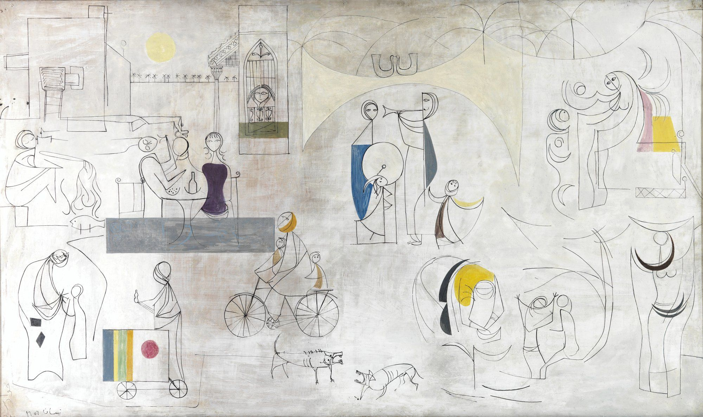
Baghdadiat presents a broad field populated by figures, architectural forms, animals and fragments of everyday activity. The composition is predominantly pale and spacious, with delicate dark outlines defining individual scenes across the hardboard. Small areas of yellow, blue, green, purple and red interrupt the muted surface, drawing attention to particular figures and objects without overwhelming the composition. The result is not a conventionally realistic representation of one location. Instead, separate moments seem to coexist within a larger visual field, giving the work the quality of a collection of observations.
تقدم لوحة بغداديات مساحة واسعة تنتشر فيها شخصيات وأشكال معمارية وحيوانات وشذرات من أنشطة الحياة اليومية. يغلب على التكوين طابع فاتح وواسع، بينما تحدد الخطوط الداكنة الرقيقة المشاهد الفردية الموزعة على سطح اللوح الصلب. تتخلل المساحة الهادئة مساحات صغيرة من الأصفر والأزرق والأخضر والبنفسجي والأحمر، فتلفت الانتباه إلى شخصيات وعناصر محددة من دون أن تطغى على التكوين. لا تقدم اللوحة تمثيلاً واقعياً تقليدياً لمكان واحد، بل تبدو اللحظات المنفصلة وكأنها تتعايش داخل مجال بصري أوسع، مما يمنح العمل طابع مجموعة من الملاحظات البصرية.
Across Baghdadiat, everyday life is broken into a series of compact encounters. Figures gather around a table in the upper left, while other groups stand or move across the composition. A cyclist occupies the lower central area, accompanied by smaller figures and two animals. Elsewhere, pairs and groups appear in conversation or interaction. Architectural details are similarly dispersed throughout the painting: doors, windows, walls and other linear structures suggest an urban environment without defining a single continuous street or building. Curved lines extending across the upper portion of the work loosely connect these otherwise separate scenes.
The human figures are highly simplified. Bodies are reduced to flowing lines, arcs and elongated geometric forms, while facial features are minimal. This simplification allows the figures to function as part of the painting's overall rhythm rather than as individualized portraits. Repeated circular and curving forms connect people, architecture, bicycles and decorative elements. The painting therefore moves between recognizable scenes and abstraction, allowing the viewer to identify fragments of daily activity while simultaneously experiencing the work as an arrangement of lines, shapes and colors.
The title Baghdadiat strengthens the relationship between these visual fragments and Baghdad. Rather than offering a literal panoramic view, the work presents a city through accumulated details of people, movement, architecture and social interaction. This approach connects particularly well with the broader concerns surrounding the Baghdad Modern Art Group. Mathaf explains that the group drew both from Baghdad’s historical inheritance and from contemporary modernism, seeking to negotiate a modern artistic position between its location and the wider world. In Baghdadiat, this negotiation can be considered through the combination of recognizable urban and human subjects with a distinctly simplified and experimental pictorial language.
تُجزّئ لوحة بغداديات الحياة اليومية إلى سلسلة من اللقاءات المكثفة. تجتمع شخصيات حول طاولة في الجزء العلوي الأيسر، بينما تقف مجموعات أخرى أو تتحرك عبر التكوين. يشغل راكب دراجة المنطقة الوسطى السفلية، وتحيط به شخصيات أصغر وحيوانان. وفي مواضع أخرى، تظهر ثنائيات ومجموعات في حالات من الحوار أو التفاعل. كما تتوزع التفاصيل المعمارية في أنحاء اللوحة، إذ توحي الأبواب والنوافذ والجدران والبنى الخطية الأخرى ببيئة حضرية من دون تحديد شارع واحد متصل أو مبنى بعينه. وتربط الخطوط المنحنية الممتدة عبر الجزء العلوي من العمل بين هذه المشاهد المنفصلة بصورة فضفاضة.
تتسم الشخصيات البشرية بقدر كبير من الاختزال. فقد اختُصرت الأجساد إلى خطوط متدفقة وأقواس وأشكال هندسية ممدودة، بينما بقيت ملامح الوجوه محدودة. ويسمح هذا التبسيط للشخصيات بأن تعمل كجزء من الإيقاع العام للوحة بدلاً من أن تظهر كصور فردية مستقلة. وترتبط الشخصيات والعناصر المعمارية والدراجات والعناصر الزخرفية من خلال أشكال دائرية ومنحنية متكررة. وهكذا تنتقل اللوحة بين المشاهد القابلة للتعرف والتجريد، مما يتيح للمشاهد تمييز شذرات من النشاط اليومي وفي الوقت نفسه اختبار العمل بوصفه ترتيباً من الخطوط والأشكال والألوان.
يعزز عنوان بغداديات العلاقة بين هذه الشذرات البصرية ومدينة بغداد. وبدلاً من تقديم مشهد بانورامي حرفي، يعرض العمل المدينة من خلال تفاصيل متراكمة عن الناس والحركة والعمارة والتفاعل الاجتماعي. ويرتبط هذا النهج بصورة خاصة بالقضايا الأوسع التي تناولتها جماعة بغداد للفن الحديث. ويوضح متحف أن الجماعة استمدت أفكارها من الإرث التاريخي لبغداد ومن الحداثة المعاصرة معاً، وسعت إلى تطوير موقف فني حديث يربط بين موقعها والعالم الأوسع. ويمكن فهم هذا التفاعل في بغداديات من خلال الجمع بين الموضوعات الحضرية والبشرية القابلة للتعرف ولغة تصويرية مبسطة وتجريبية بوضوح.
A different approach to the human figure appears in Shakir Hassan Al Said’s Title Unknown. Where Baghdadiat spreads many small scenes across a wide composition, Title Unknown concentrates visual activity within a more compressed vertical space. Large interlocking forms occupy most of the canvas. White and pale areas dominate the composition, bordered and interrupted by deep blue, turquoise, green, yellow, pink and dark red. These shapes overlap so closely that the boundaries between individual figures and surrounding space often become difficult to separate.
يظهر في لوحة شاكر حسن آل سعيد عنوان غير معروف نهج مختلف في تمثيل الجسد البشري. فبينما توزع لوحة بغداديات عدداً كبيراً من المشاهد الصغيرة على تكوين واسع، تركز لوحة عنوان غير معروف النشاط البصري داخل مساحة عمودية أكثر كثافة. وتشغل الأشكال الكبيرة المتداخلة معظم مساحة اللوحة. تهيمن المساحات البيضاء والفاتحة على التكوين، وتحيط بها أو تتخللها ألوان الأزرق الداكن والفيروزي والأخضر والأصفر والوردي والأحمر الداكن. وتتداخل هذه الأشكال بدرجة تجعل الحدود بين الشخصيات الفردية والمساحة المحيطة بها صعبة التمييز في كثير من الأحيان.
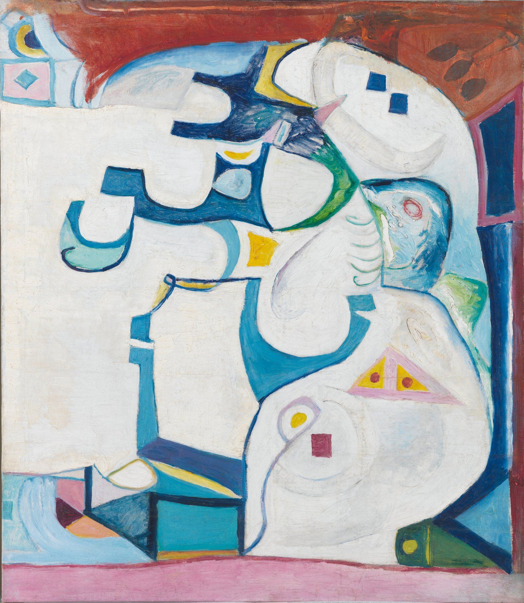
The painting suggests several interconnected human forms without presenting the body naturalistically. Curved shapes resemble heads and limbs, while smaller geometric marks appear within the larger forms. Two dark blue squares, a yellow square, a magenta square and triangular elements provide strong visual accents. The large blue and turquoise areas create a cool foundation for the composition, while the red-brown zone running across the top and right side forms a contrasting boundary around the lighter central forms.
Rather than constructing a clear narrative, Title Unknown encourages attention to the relationships between forms. Shapes appear to overlap, connect and emerge from one another, creating an image in which the human figure approaches abstraction without disappearing completely. The outlines of bodies remain visible enough to establish a figurative presence, but anatomy is reorganized into curved planes and geometric sections. The composition consequently shifts between recognition and ambiguity: the viewer repeatedly encounters a recognizable feature before it merges back into the surrounding structure.
The painting's 1961 date also places it within the period in which the Baghdad Modern Art Group was undergoing important changes. Mathaf notes that the current exhibition examines the development of the group through the evolving work of its two leaders, Jewad Selim and Shakir Hassan Al Said, while tracing changes in membership over its first decade and later attempts to continue the collective. Seen within that history, Title Unknown provides a useful counterpart to Baghdadiat: both works retain recognizable connections to the human figure, but each organizes those forms differently.
Together, the two works demonstrate two distinct approaches within the artistic environment surrounding the Baghdad Modern Art Group. Baghdadiat expands outward, assembling figures, architecture and episodes of everyday life across a wide surface. Title Unknown turns inward toward a denser arrangement in which bodies and abstract forms become intertwined. Their differences help show that the group's significance did not depend on producing one consistent visual style. Instead, as Mathaf’s exhibition emphasizes, its history can be understood through the development of its aesthetics, the changing practices of its members and the wider legacy of the ideas generated around the group.
توحي اللوحة بوجود عدد من الأشكال البشرية المترابطة من دون تقديم الجسد بصورة طبيعية. تشبه الأشكال المنحنية الرؤوس والأطراف، بينما تظهر علامات هندسية أصغر داخل الأشكال الأكبر. ويشكل مربعان باللون الأزرق الداكن ومربع أصفر ومربع أرجواني وعناصر مثلثة نقاطاً بصرية بارزة. وتوفر المساحات الكبيرة باللونين الأزرق والفيروزي أساساً بارداً للتكوين، بينما تشكل المنطقة البنية المائلة إلى الأحمر الممتدة عبر الجزء العلوي والجانب الأيمن حداً متبايناً يحيط بالأشكال المركزية الفاتحة.
بدلاً من بناء سرد واضح، تشجع لوحة عنوان غير معروف على الانتباه إلى العلاقات بين الأشكال. تبدو الأشكال وكأنها تتداخل وتتصل وتنبثق من بعضها بعضاً، مما يكوّن صورة يقترب فيها الجسد البشري من التجريد من دون أن يختفي تماماً. وتبقى الخطوط الخارجية للأجساد واضحة بما يكفي لإثبات حضور تشخيصي، إلا أن التكوين التشريحي يُعاد تنظيمه في مساحات منحنية وأقسام هندسية. ونتيجة لذلك، ينتقل التكوين بين إمكانية التعرف والغموض، إذ يصادف المشاهد مراراً عنصراً مألوفاً قبل أن يندمج من جديد في البنية المحيطة.
كما يضع تاريخ اللوحة، وهو عام 1961، العمل ضمن الفترة التي شهدت فيها جماعة بغداد للفن الحديث تغيرات مهمة. ويشير متحف إلى أن المعرض الحالي يتناول تطور الجماعة من خلال التحولات التي شهدتها أعمال قائديها، جواد سليم وشاكر حسن آل سعيد، مع تتبع التغيرات في عضويتها خلال عقدها الأول والمحاولات اللاحقة لاستمرار الجماعة. ومن خلال هذا السياق التاريخي، تقدم لوحة عنوان غير معروف مقابلاً مفيداً للوحة بغداديات. يحتفظ كلا العملين بصلات واضحة مع الجسد البشري، إلا أن كلاً منهما ينظم هذه الأشكال بطريقة مختلفة.
يُظهر العملان معاً نهجين مختلفين داخل البيئة الفنية المرتبطة بجماعة بغداد للفن الحديث. تتوسع لوحة بغداديات نحو الخارج، فتجمع الشخصيات والعناصر المعمارية ومشاهد الحياة اليومية عبر سطح واسع. أما لوحة عنوان غير معروف فتتجه نحو الداخل من خلال ترتيب أكثر كثافة تتشابك فيه الأجساد والأشكال التجريدية. وتوضح الاختلافات بين العملين أن أهمية الجماعة لم تعتمد على إنتاج أسلوب بصري واحد ومتجانس. وبدلاً من ذلك، وكما يؤكد معرض متحف، يمكن فهم تاريخ الجماعة من خلال تطور جمالياتها وتغير ممارسات أعضائها والإرث الأوسع للأفكار التي نشأت في محيطها.
The artistic environment that developed around the Baghdad Modern Art Group brought together different approaches to representing people, everyday life, and the changing visual culture of modern Iraq. While the artists associated with this history did not follow a single visual style, their works reveal different ways of combining modern artistic experimentation with subjects drawn from the world around them. Mathaf’s exhibition What Lingers in the Artist Mind examines this history through the development of the group, its changing membership, the relationships between artists, and the influence its ideas had on later generations.
The three works presented in this volume offer distinct approaches to the human figure. Dia Al-Azzawi reduces figures and their surroundings into simplified shapes and geometric elements; Lorna Selim places a small group of figures at the centre of a closely observed portrait-like composition; and Faiq Hassan constructs a much broader scene filled with people, architecture, objects, and movement. Seen together, the works demonstrate how the figure could become a point of departure for very different experiments in form, colour, composition, and representations of everyday life.
جمعت البيئة الفنية التي تطورت حول جماعة بغداد للفن الحديث بين أساليب مختلفة في تمثيل الناس والحياة اليومية والثقافة البصرية المتغيرة في العراق الحديث. وعلى الرغم من أن الفنانين المرتبطين بهذا التاريخ لم يتبعوا أسلوباً بصرياً واحداً، تكشف أعمالهم عن طرق مختلفة للجمع بين التجريب الفني الحديث والموضوعات المستمدة من العالم المحيط بهم. ويتناول معرض متحف ما يبقى في ذهن الفنان هذا التاريخ من خلال تطور الجماعة، وتغير عضويتها، والعلاقات بين الفنانين، والتأثير الذي تركته أفكارها في الأجيال اللاحقة.
تقدم الأعمال الثلاثة المعروضة في هذا المجلد أساليب مختلفة في معالجة الجسد البشري. يختزل ضياء العزاوي الشخصيات ومحيطها إلى أشكال مبسطة وعناصر هندسية، بينما تضع لورنا سليم مجموعة صغيرة من الشخصيات في مركز تكوين يشبه الصورة الشخصية ويعتمد على الملاحظة الدقيقة، في حين يبني فائق حسن مشهداً أوسع بكثير تمتلئ مساحته بالناس والعمارة والأشياء والحركة. وعند النظر إلى هذه الأعمال معاً، يتضح كيف يمكن للجسد البشري أن يصبح نقطة انطلاق لتجارب شديدة الاختلاف في الشكل واللون والتكوين وتمثيل الحياة اليومية.
Dia Al-Azzawi’s Khalifa’s Wife presents three highly simplified figures positioned against a large textured field of muted gold and brown. Rather than creating a detailed setting, Al-Azzawi leaves much of the background open, allowing the figures and geometric structures to become the primary focus of the composition. The three figures differ considerably in scale and are positioned separately across the canvas. A green figure occupies the left, a smaller grey figure sits lower in the centre, and a larger pink and brown figure dominates the right side. The separation between them creates a sense of space while still connecting the figures through repeated shapes, colours, and lines.
تقدم لوحة ضياء العزاوي زوجة الخليفة ثلاث شخصيات شديدة الاختزال موضوعة أمام مساحة كبيرة ذات ملمس تتداخل فيها درجات هادئة من الذهبي والبني. وبدلاً من إنشاء بيئة غنية بالتفاصيل، يترك العزاوي جزءاً كبيراً من الخلفية مفتوحاً، مما يجعل الشخصيات والبنى الهندسية المحور الأساسي للتكوين. تختلف الشخصيات الثلاث اختلافاً واضحاً في أحجامها، وتتوزع بصورة منفصلة عبر سطح اللوحة. تظهر شخصية خضراء إلى اليسار، وشخصية رمادية أصغر حجماً في الجزء السفلي من الوسط، بينما تهيمن شخصية أكبر باللونين الوردي والبني على الجانب الأيمن. ويخلق الفصل بينها إحساساً بالمساحة، مع بقائها مترابطة من خلال تكرار الأشكال والألوان والخطوط.
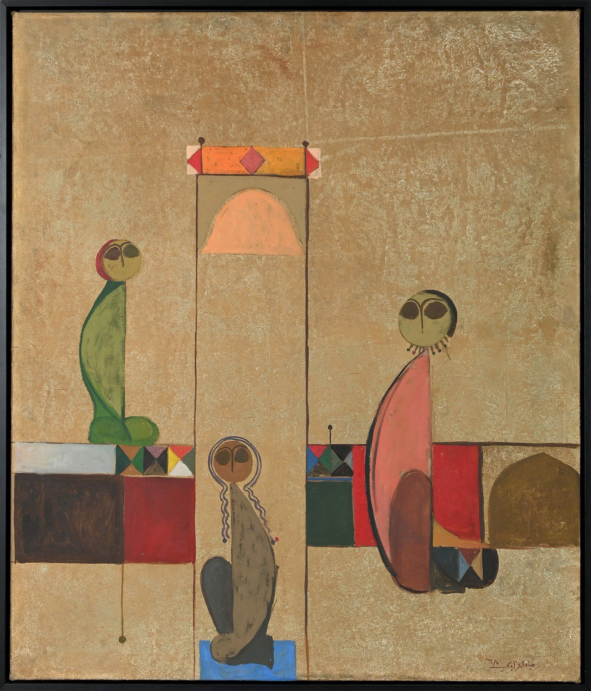
The human body is represented through an extremely reduced visual language. Faces are constructed from circular or oval forms with large dark eyes and minimal features. The bodies are similarly simplified into elongated curved shapes rather than anatomically detailed forms. Al-Azzawi uses these reductions to shift attention away from realistic representation and toward the relationships between colour, line, shape, and scale. The figures remain clearly recognizable as human forms, but they also operate as abstract components within the larger composition.
Geometric structures add another layer to the scene. Rectangular blocks extend horizontally behind the figures and are divided into areas of red, green, brown, black and white. Small triangles, diamonds and other geometric motifs appear within these structures. A tall rectangular construction rises through the centre of the painting, topped by an orange band containing a central diamond shape. Its narrow vertical lines divide the surrounding space and provide a structural contrast to the curved outlines of the figures.
Colour plays an important role in organizing the work. The subdued gold background establishes a relatively continuous surface, while areas of green, coral pink, blue, red and orange create strong points of contrast. The smaller figure at the centre is anchored by a vivid blue rectangular area at the bottom of the canvas. Similar contrasts appear underneath the two larger figures, where blocks of colour break up the otherwise restrained background. These concentrated areas of colour create a visual rhythm across the composition without filling the entire surface.
Although Khalifa’s Wife contains recognizable figures, the painting resists straightforward narrative description. The sparse setting and simplified bodies leave many details visually unresolved. Instead, the work invites attention to the way the three figures occupy and divide space. The combination of human forms with geometric structures demonstrates how figurative imagery can move toward abstraction while remaining connected to recognizable human subjects.
يُمثل الجسد البشري من خلال لغة بصرية شديدة الاختزال. تتكون الوجوه من أشكال دائرية أو بيضاوية بعيون داكنة كبيرة وملامح محدودة. كما تُبسط الأجساد إلى أشكال منحنية وممدودة بدلاً من الأشكال التشريحية المفصلة. يستخدم العزاوي هذا الاختزال لتحويل الانتباه بعيداً عن التمثيل الواقعي ونحو العلاقات بين اللون والخط والشكل والحجم. وتبقى الشخصيات قابلة للتعرف بوضوح بوصفها أشكالاً بشرية، إلا أنها تعمل أيضاً كعناصر تجريدية داخل التكوين الأكبر.
تضيف البنى الهندسية طبقة أخرى إلى المشهد. تمتد كتل مستطيلة أفقياً خلف الشخصيات، وتنقسم إلى مساحات من الأحمر والأخضر والبني والأسود والأبيض. وتظهر مثلثات ومعينات صغيرة وزخارف هندسية أخرى داخل هذه البنى. ويرتفع بناء مستطيل طويل عبر وسط اللوحة، تعلوه مساحة برتقالية تحتوي على شكل معين في المركز. وتقسم خطوطه العمودية الضيقة المساحة المحيطة، وتوفر تبايناً بنيوياً مع الخطوط الخارجية المنحنية للشخصيات.
يلعب اللون دوراً مهماً في تنظيم العمل. تؤسس الخلفية الذهبية الهادئة سطحاً متصلاً نسبياً، بينما تخلق المساحات الخضراء والوردية المرجانية والزرقاء والحمراء والبرتقالية نقاطاً قوية من التباين. ترتكز الشخصية الأصغر في الوسط على مساحة مستطيلة زرقاء زاهية في الجزء السفلي من اللوحة. وتظهر تناقضات مشابهة تحت الشخصيتين الأكبر حجماً، حيث تقطع كتل اللون الخلفية الهادئة. وتخلق هذه المساحات اللونية المركزة إيقاعاً بصرياً عبر التكوين من دون أن تملأ السطح بأكمله.
على الرغم من احتواء لوحة زوجة الخليفة على شخصيات قابلة للتعرف، فإن العمل يقاوم الوصف السردي المباشر. تترك البيئة المحدودة والأجساد المبسطة كثيراً من التفاصيل من دون تفسير بصري واضح. وبدلاً من ذلك، يدعو العمل إلى الانتباه إلى الطريقة التي تشغل بها الشخصيات الثلاث المساحة وتقسمها. ويوضح الجمع بين الأشكال البشرية والبنى الهندسية كيف يمكن للصورة التشخيصية أن تتحرك نحو التجريد مع بقائها مرتبطة بموضوعات بشرية قابلة للتعرف.
Lorna Selim’s Untitled presents a closely arranged group of three figures that fills much of the vertical canvas. Unlike the open composition of Khalifa’s Wife, the figures here overlap and occupy a concentrated area, creating a strong visual connection between their bodies. The largest figure dominates the left and centre of the painting, while another figure appears just behind and above the central form. A smaller figure occupies the lower right. This arrangement creates several different levels within the composition while keeping all three figures visually connected.
تقدم لوحة لورنا سليم بلا عنوان مجموعة متقاربة من ثلاث شخصيات تشغل جزءاً كبيراً من المساحة العمودية للوحة. وعلى خلاف التكوين المفتوح في زوجة الخليفة، تتداخل الشخصيات هنا وتشغل مساحة مركزة، مما يخلق ارتباطاً بصرياً قوياً بين الأجساد. تهيمن الشخصية الأكبر على الجانب الأيسر ووسط اللوحة، بينما تظهر شخصية أخرى خلف الشكل المركزي وفوقه بقليل. وتشغل شخصية أصغر الجانب السفلي الأيمن. ويخلق هذا الترتيب مستويات مختلفة داخل التكوين مع الإبقاء على ترابط بصري بين الشخصيات الثلاث.
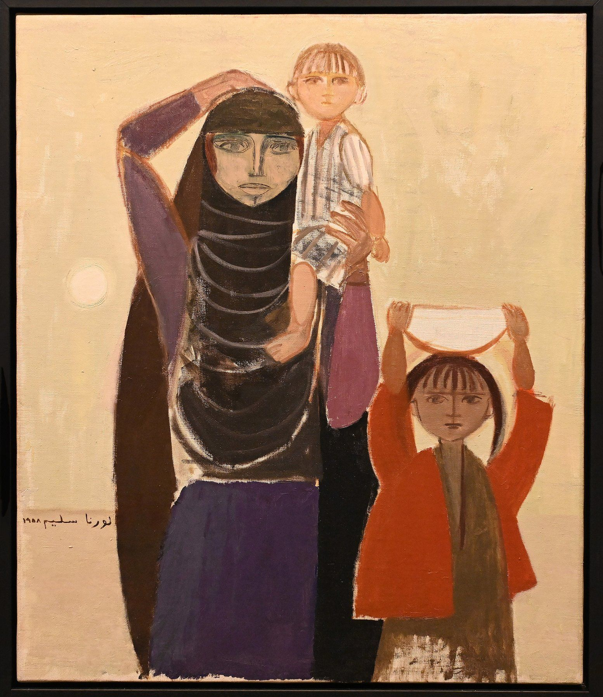
The largest figure is built from substantial areas of black and deep purple, producing the darkest section of the painting. Curving horizontal lines move across the dark clothing, while the face is rendered with clearly defined eyes, nose and mouth. One arm rises above the head, creating a diagonal movement that leads toward the figure positioned behind. That second figure is distinguished by lighter striped clothing and stands vertically against the pale background. The overlapping arrangement makes the group appear almost as a single interconnected structure.
The smaller figure on the right introduces a particularly strong area of colour. An intense orange-red garment contrasts with the black and purple of the larger figure and with the pale cream background. Both arms are lifted upward, holding a rectangular white form above the head. Dark vertical lines repeat in the hair of this figure and the figure positioned behind the central subject, establishing a subtle visual connection between different portions of the painting.
Selim’s treatment of the faces differs noticeably from the highly simplified forms in Al-Azzawi’s Khalifa’s Wife. Facial features here receive greater definition, particularly in the central figure, whose eyes, nose, mouth and facial contours are articulated through dark linear marks. Nevertheless, the image does not attempt photographic realism. Proportions, outlines and areas of colour are simplified, maintaining the painting’s emphasis on its constructed surface and the relationship between the figures.
The background contributes significantly to this effect. Rather than constructing a detailed interior or landscape, Selim uses a largely pale, warm field that gives the figures considerable visual prominence. The restricted setting means that nearly all attention remains on posture, clothing, facial features and the physical arrangement of the group. Black, purple, orange, brown and cream establish the main palette, with the strong differences between these colours helping distinguish each figure while maintaining the overall unity of the composition.
Untitled therefore creates an intimate study of people through closeness rather than through a detailed narrative environment. The figures are positioned so tightly together that their shapes repeatedly overlap, emphasizing the group as much as the individuals within it. Selim’s combination of recognizable figures, simplified forms and expressive areas of colour gives the painting a distinctive position between direct observation and modernist experimentation.
تتكون الشخصية الأكبر من مساحات واسعة من الأسود والبنفسجي الداكن، مما ينتج أكثر مناطق اللوحة قتامة. تتحرك خطوط أفقية منحنية عبر الملابس الداكنة، بينما يظهر الوجه بعيون وأنف وفم محددة بوضوح. ترتفع إحدى الذراعين فوق الرأس، فتخلق حركة قطرية تقود نحو الشخصية الموجودة في الخلف. وتتميز الشخصية الثانية بملابس مخططة أفتح لوناً، وتقف بصورة عمودية أمام الخلفية الفاتحة. ويجعل التداخل بين الشخصيات المجموعة تبدو وكأنها بنية واحدة مترابطة.
تقدم الشخصية الأصغر على الجانب الأيمن مساحة لونية شديدة القوة. يتباين الرداء البرتقالي المائل إلى الأحمر مع الأسود والبنفسجي في الشخصية الأكبر ومع الخلفية الكريمية الفاتحة. وترتفع الذراعان إلى الأعلى، ممسكتين بشكل أبيض مستطيل فوق الرأس. وتتكرر الخطوط العمودية الداكنة في شعر هذه الشخصية وفي شعر الشخصية الموجودة خلف الشخصية المركزية، مما ينشئ ارتباطاً بصرياً خفيفاً بين أجزاء مختلفة من اللوحة.
تختلف معالجة سليم للوجوه بصورة واضحة عن الأشكال شديدة الاختزال في لوحة العزاوي زوجة الخليفة. تحصل ملامح الوجه هنا على قدر أكبر من التحديد، ولا سيما في الشخصية المركزية التي تظهر عيناها وأنفها وفمها وحدود وجهها من خلال علامات خطية داكنة. ومع ذلك، لا تحاول الصورة تحقيق واقعية فوتوغرافية. فقد بُسّطت النسب والخطوط الخارجية والمساحات اللونية، مع الحفاظ على تركيز اللوحة على سطحها المركب والعلاقة بين الشخصيات.
تسهم الخلفية بصورة كبيرة في هذا التأثير. فبدلاً من بناء مساحة داخلية أو منظر طبيعي غني بالتفاصيل، تستخدم سليم مجالاً دافئاً وفاتحاً في معظمه، مما يمنح الشخصيات حضوراً بصرياً بارزاً. وتعني محدودية البيئة المحيطة أن معظم الانتباه يظل موجهاً نحو وضعيات الأجساد والملابس وملامح الوجوه والترتيب الجسدي للمجموعة. وتشكل درجات الأسود والبنفسجي والبرتقالي والبني والكريمي لوحة الألوان الأساسية، بينما تساعد الاختلافات الواضحة بينها على تمييز كل شخصية مع الحفاظ على وحدة التكوين.
وهكذا تقدم لوحة بلا عنوان دراسة حميمة للناس من خلال التقارب بدلاً من الاعتماد على بيئة سردية مفصلة. وُضعت الشخصيات بصورة متقاربة إلى حد تتداخل معه أشكالها مراراً، مما يؤكد أهمية المجموعة بقدر أهمية الأفراد داخلها. ويمنح جمع سليم بين الشخصيات القابلة للتعرف والأشكال المبسطة والمساحات اللونية التعبيرية اللوحة موقعاً مميزاً بين الملاحظة المباشرة والتجريب الحداثي.
Faiq Hassan’s Village Scene expands the focus from a closely arranged group of figures to a much broader social setting. The horizontal canvas contains numerous figures surrounded by architectural structures, objects and overlapping areas of colour. Instead of isolating the figures against a largely empty background, Hassan places them within a densely constructed environment. The result is a composition in which human activity and the surrounding setting are closely intertwined.
توسع لوحة فائق حسن مشهد من القرية نطاق التركيز من مجموعة متقاربة من الشخصيات إلى بيئة اجتماعية أوسع بكثير. تحتوي اللوحة الأفقية على عدد كبير من الشخصيات تحيط بها بنى معمارية وأشياء ومساحات لونية متداخلة. وبدلاً من عزل الشخصيات أمام خلفية فارغة إلى حد كبير، يضعها حسن داخل بيئة كثيفة البناء. والنتيجة تكوين يتشابك فيه النشاط البشري بصورة وثيقة مع البيئة المحيطة.
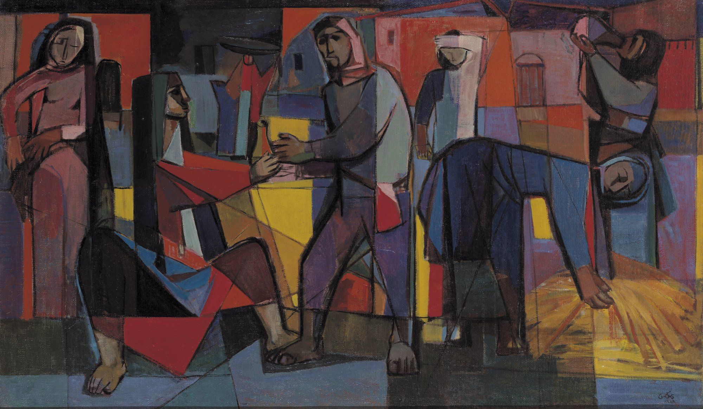
Across the painting, figures occupy different positions and appear engaged in different actions. Some stand upright while others bend, sit or reach across the composition. At the centre, overlapping figures and brightly coloured geometric forms create one of the densest areas of visual activity. Toward the right, a bent figure extends downward toward a large yellow area composed of repeated lines, while another figure occupies the upper-right section of the painting. The differing poses establish movement across the scene and encourage the viewer’s eye to travel from one area of activity to another.
The surrounding architecture is fragmented into blocks instead of being constructed according to strict naturalistic perspective. Rectangular areas of red, orange, blue, purple and dark brown suggest walls, doors and building facades. Human bodies frequently overlap these structures, reducing the distinction between figure and environment. The composition is therefore built through interlocking planes, with people, buildings and objects sharing the same strongly outlined visual language.
Colour is particularly important to the energy of Village Scene. Deep blues and blacks sit beside warmer reds, oranges and yellows, while muted purple, grey and green tones connect different parts of the painting. Several of the brightest areas occur near the centre and lower right, helping direct attention through the otherwise densely arranged scene. Rather than using colour only to imitate the appearance of the physical world, Hassan uses contrasting colour fields to organize the composition and distinguish its interconnected parts.
The human figures remain recognizable, yet they are simplified through angular outlines and broad planes of colour. Faces and bodies contain enough detail to establish the presence of people without becoming individualized portraits. Hands, feet, clothing and postures are incorporated into the surrounding network of lines. This balance allows Village Scene to represent human activity while simultaneously emphasizing the formal construction of the painting itself.
The title Village Scene directs attention toward collective activity rather than an individual subject. The wide horizontal format reinforces this expansive view, allowing several figures and moments to coexist within the same pictorial space. Instead of concentrating on a single central figure, the painting creates a network of visual relationships across the canvas. People, architecture, colour and movement together become the subject of the work.
Mathaf identifies Village Scene as a 1958 oil painting by Faiq Hassan measuring 125 × 188.2 cm and includes the work in the context of What Lingers in the Artist Mind. The exhibition more broadly examines the development, changing membership and artistic legacy surrounding the Baghdad Modern Art Group and its place within histories of Iraqi modern art.
Taken together, Khalifa’s Wife, Untitled and Village Scene demonstrate markedly different ways of approaching the human figure. Al-Azzawi isolates simplified bodies within an expansive geometric field, Selim concentrates attention on an overlapping group of figures, while Hassan distributes human activity across a much wider and more complex environment. The movement from open space to intimate grouping and finally to a densely populated scene creates three different relationships between people and their surroundings.
The differences between the works also reflect the wider variety of artistic experimentation surrounding Iraqi modern art during this period. Rather than presenting modernism as a single visual language, these paintings demonstrate how artists could approach similar subjects through abstraction, figuration, geometry, colour and observations of everyday life. This diversity connects with Mathaf’s broader examination of the Baghdad Modern Art Group’s aesthetics and legacy, including the changing practices and relationships that allowed its ideas to extend beyond the collective itself.
تشغل الشخصيات مواقع مختلفة في أنحاء اللوحة، وتبدو منخرطة في أفعال متنوعة. تقف بعض الشخصيات منتصبة، بينما تنحني شخصيات أخرى أو تجلس أو تمد أطرافها عبر التكوين. وفي الوسط، تخلق الشخصيات المتداخلة والأشكال الهندسية ذات الألوان الزاهية إحدى أكثر مناطق النشاط البصري كثافة. ونحو اليمين، تمتد شخصية منحنية إلى الأسفل باتجاه مساحة صفراء كبيرة تتكون من خطوط متكررة، بينما تشغل شخصية أخرى الجزء العلوي الأيمن من اللوحة. وتؤسس الوضعيات المختلفة حركة عبر المشهد، وتشجع عين المشاهد على الانتقال من منطقة نشاط إلى أخرى.
تتفكك العمارة المحيطة إلى كتل بدلاً من بنائها وفق منظور طبيعي صارم. توحي المساحات المستطيلة من الأحمر والبرتقالي والأزرق والبنفسجي والبني الداكن بالجدران والأبواب وواجهات المباني. وتتداخل الأجساد البشرية بصورة متكررة مع هذه البنى، مما يقلل التمييز بين الشخصية والبيئة. ولذلك يُبنى التكوين من خلال مستويات متشابكة يشترك فيها الناس والمباني والأشياء في اللغة البصرية نفسها القائمة على الخطوط الخارجية الواضحة.
يحظى اللون بأهمية خاصة في الطاقة البصرية للوحة مشهد من القرية. تجاور درجات الأزرق الداكن والأسود درجات أكثر دفئاً من الأحمر والبرتقالي والأصفر، بينما تربط الدرجات الهادئة من البنفسجي والرمادي والأخضر بين أجزاء مختلفة من اللوحة. وتظهر عدة مناطق شديدة السطوع بالقرب من الوسط والجزء السفلي الأيمن، مما يساعد على توجيه الانتباه عبر المشهد ذي الترتيب الكثيف. وبدلاً من استخدام اللون فقط لمحاكاة مظهر العالم المادي، يستخدم حسن المساحات اللونية المتباينة لتنظيم التكوين وتمييز أجزائه المترابطة.
تبقى الشخصيات البشرية قابلة للتعرف، إلا أنها مبسطة من خلال خطوط خارجية زاوية ومساحات لونية واسعة. تحتوي الوجوه والأجساد على تفاصيل تكفي لإثبات حضور الناس من دون أن تتحول إلى صور شخصية فردية. وتندمج الأيدي والأقدام والملابس والوضعيات في شبكة الخطوط المحيطة. ويسمح هذا التوازن للوحة مشهد من القرية بتمثيل النشاط البشري والتأكيد، في الوقت نفسه، على البناء الشكلي للعمل نفسه.
يوجه عنوان مشهد من القرية الانتباه نحو النشاط الجماعي بدلاً من موضوع فردي. ويعزز الشكل الأفقي الواسع هذا المنظور الممتد، إذ يسمح بتعايش عدد من الشخصيات واللحظات داخل المساحة التصويرية نفسها. وبدلاً من التركيز على شخصية مركزية واحدة، تنشئ اللوحة شبكة من العلاقات البصرية عبر سطحها. ويصبح الناس والعمارة واللون والحركة معاً موضوع العمل.
يعرّف متحف لوحة مشهد من القرية بوصفها لوحة زيتية أنجزها فائق حسن عام 1958 وتبلغ أبعادها 125 × 188.2 سم، ويعرض العمل في سياق معرض ما يبقى في ذهن الفنان. ويتناول المعرض بصورة أوسع تطور جماعة بغداد للفن الحديث، وتغير عضويتها، وإرثها الفني، ومكانتها ضمن تاريخ الفن العراقي الحديث.
تُظهر لوحات زوجة الخليفة وبلا عنوان ومشهد من القرية، عند النظر إليها معاً، طرقاً مختلفة بوضوح في معالجة الجسد البشري. يعزل العزاوي الأجساد المبسطة داخل مجال هندسي واسع، بينما تركز سليم الانتباه على مجموعة متداخلة من الشخصيات، في حين يوزع حسن النشاط البشري عبر بيئة أكثر اتساعاً وتعقيداً. ويخلق الانتقال من المساحة المفتوحة إلى التجمع الحميم، ثم إلى مشهد كثيف بالشخصيات، ثلاث علاقات مختلفة بين الناس ومحيطهم.
تعكس الاختلافات بين الأعمال أيضاً التنوع الأوسع للتجارب الفنية المرتبطة بالفن العراقي الحديث خلال هذه الفترة. وبدلاً من تقديم الحداثة بوصفها لغة بصرية واحدة، توضح هذه اللوحات كيف استطاع الفنانون تناول موضوعات متشابهة من خلال التجريد والتشخيص والهندسة واللون وملاحظة الحياة اليومية. ويرتبط هذا التنوع بدراسة متحف الأوسع لجماليات جماعة بغداد للفن الحديث وإرثها، بما في ذلك تغير الممارسات والعلاقات التي سمحت لأفكارها بالامتداد إلى ما يتجاوز الجماعة نفسها.
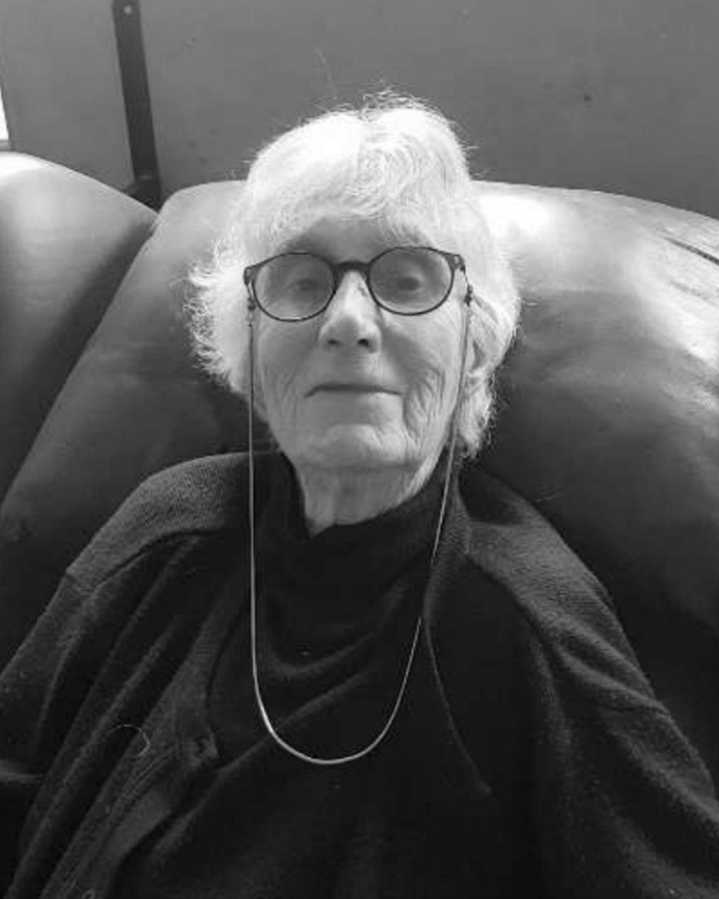
| Artist | Lorna Selim |
|---|---|
| Year | 1936-2021 |
Lorna Selim developed an artistic practice closely connected to the changing cultural and architectural landscape of Baghdad. Born in Sheffield, England, in 1928, she studied art in London between 1945 and 1949 before moving to Baghdad in 1950. There she became immersed in a rapidly developing artistic environment and began looking closely at the people, buildings, colours, and patterns that surrounded her. Rather than treating Baghdad merely as a backdrop, Selim made the city and its everyday visual character an important source for her artistic practice.
Her arrival in Baghdad coincided with an important period in the development of Iraqi modern art. Selim became involved in the city’s artistic societies, painting and exhibiting with Faiq Hassan’s Pioneers group, also known as Al Rowad. Following the establishment of the Baghdad Modern Art Group by Jewad Selim and Shakir Hassan Al Said in 1951, she also exhibited with the group. Mathaf describes her contribution as important in encouraging artists to look toward Baghdad itself and to recognise the visual richness of their surroundings as a source of inspiration.
Selim’s paintings developed through a combination of observation and simplification. According to Mathaf, her work during her years in Baghdad moved between representations of local scenes influenced by European modernism and a more abstract approach in which architecture and people were transformed into simple shapes and lines. Geometry became especially important to this second approach, allowing Selim to draw from patterns already visible within Baghdad’s architecture, walls, clothing, and urban environment.
This interest in simplification can be seen in Title Unknown (1962). The painting is dominated by dark blue and black, with figures and objects organized into narrow vertical sections. Human forms are reduced to elongated silhouettes, circular heads, curved shapes, and blocks of colour. White and pale blue areas emerge strongly against the dark background, while smaller areas of red, yellow, green, and brown punctuate the composition.
طورت لورنا سليم ممارسة فنية ارتبطت ارتباطاً وثيقاً بالمشهد الثقافي والمعماري المتغير في بغداد. وُلدت في شيفيلد بإنجلترا عام 1928، ودرست الفن في لندن بين عامي 1945 و1949 قبل انتقالها إلى بغداد عام 1950. وهناك انخرطت في بيئة فنية سريعة التطور، وبدأت تنظر عن كثب إلى الناس والمباني والألوان والأنماط التي أحاطت بها. وبدلاً من التعامل مع بغداد باعتبارها مجرد خلفية، جعلت سليم من المدينة وطابعها البصري اليومي مصدراً مهماً لممارستها الفنية.
تزامن وصولها إلى بغداد مع مرحلة مهمة في تطور الفن العراقي الحديث. وانخرطت سليم في الجمعيات الفنية في المدينة، فرسمت وعرضت أعمالها مع جماعة الرواد التابعة لفائق حسن. وبعد تأسيس جماعة بغداد للفن الحديث على يد جواد سليم وشاكر حسن آل سعيد عام 1951، شاركت أيضاً في معارض الجماعة. ويصف متحف إسهامها بأنه كان مهماً في تشجيع الفنانين على النظر إلى بغداد نفسها والتعرف على الثراء البصري في محيطهم بوصفه مصدراً للإلهام.
تطورت لوحات سليم من خلال الجمع بين الملاحظة والتبسيط. ووفقاً لمتحف، تنقلت أعمالها خلال سنوات إقامتها في بغداد بين تصوير المشاهد المحلية المتأثرة بالحداثة الأوروبية ومقاربة أكثر تجريداً تحولت فيها العمارة والناس إلى أشكال وخطوط بسيطة. وأصبحت الهندسة ذات أهمية خاصة في هذا النهج الثاني، إذ أتاحت لسليم الاستفادة من الأنماط الموجودة بالفعل في عمارة بغداد وجدرانها وملابس سكانها وبيئتها الحضرية.
يمكن رؤية هذا الاهتمام بالتبسيط في لوحة عنوان غير معروف (1962). يهيمن الأزرق الداكن والأسود على اللوحة، مع تنظيم الشخصيات والعناصر ضمن أقسام عمودية ضيقة. وقد اختُزلت الأشكال البشرية إلى هيئات ممدودة ورؤوس دائرية وأشكال منحنية وكتل لونية. وتبرز المساحات البيضاء والزرقاء الفاتحة بقوة أمام الخلفية الداكنة، بينما تتخلل التكوين مساحات أصغر من الأحمر والأصفر والأخضر والبني.
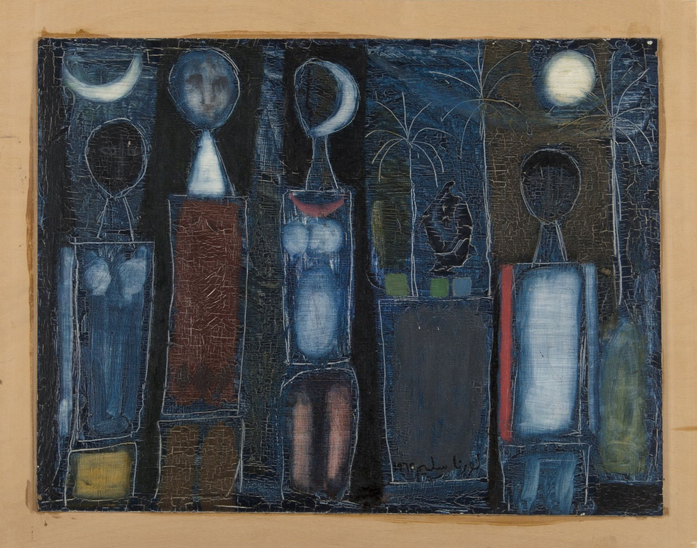
The painting does not attempt to construct a fully naturalistic environment. Instead, figures, plants, architectural shapes, and celestial forms occupy the surface almost like a collection of visual signs. Crescent-like forms appear near the upper part of the composition, while thin linear structures resembling vegetation rise between the darker figures. The repetition of upright forms creates a steady rhythm across the painting, connecting the human figures to the surrounding shapes.
The surface itself contributes to the work’s character. Visible cracking and variations in the painted texture interrupt the dark areas and give the composition a layered appearance. Against this textured surface, the softly illuminated forms become more prominent. The contrast between deep blue-black areas and lighter forms creates much of the painting’s visual structure, while the simplified geometry brings otherwise separate elements into a shared pictorial language.
The work therefore reflects Selim’s wider interest in transforming observed surroundings through abstraction. Recognizable references to people, landscape, and architecture remain present, but they are reorganized through repetition, geometry, colour, and line. The result sits between representation and abstraction, retaining connections with the visible world while allowing formal relationships to determine the composition.
Architecture became another particularly important subject in Selim’s work. During the redevelopment of Baghdad, the demolition of parts of the old city exposed streets, houses, alleyways, and architectural details that had previously been difficult to see. Selim began documenting these spaces through drawing and painting. Mathaf notes that she recorded old houses along both banks of the river and that some of her works consequently became records of architecture that was later lost.
After 1961, Selim continued developing this architectural work alongside her teaching. Mathaf describes how she took inspiration from patterns in buildings, walls, trees, and clothing. She became particularly attentive to decorative brickwork, balconies, windows, and the geometric arrangements found throughout Baghdad’s built environment. These observations provided both subject matter and formal structures for her paintings.
لا تحاول اللوحة بناء بيئة طبيعية متكاملة. وبدلاً من ذلك، تشغل الشخصيات والنباتات والأشكال المعمارية والعناصر السماوية سطح العمل بما يشبه مجموعة من العلامات البصرية. وتظهر أشكال شبيهة بالهلال بالقرب من الجزء العلوي من التكوين، بينما ترتفع بين الشخصيات الداكنة تراكيب خطية رفيعة تشبه النباتات. ويخلق تكرار الأشكال العمودية إيقاعاً منتظماً عبر اللوحة، يربط الشخصيات البشرية بالأشكال المحيطة بها.
يسهم سطح اللوحة نفسه في تكوين طابع العمل. فتقطع التشققات الظاهرة والاختلافات في الملمس المرسوم المساحات الداكنة، وتمنح التكوين مظهراً متعدد الطبقات. وعلى هذا السطح ذي الملمس الواضح، تصبح الأشكال المضيئة برفق أكثر بروزاً. ويشكل التباين بين المناطق ذات الأزرق المائل إلى الأسود والأشكال الفاتحة جزءاً كبيراً من البنية البصرية للوحة، بينما تجمع الهندسة المبسطة بين العناصر المنفصلة ضمن لغة تصويرية مشتركة.
يعكس العمل بذلك اهتمام سليم الأوسع بتحويل البيئة التي تلاحظها من خلال التجريد. وتظل الإشارات القابلة للتعرف إلى الناس والمناظر الطبيعية والعمارة موجودة، إلا أنها يعاد تنظيمها من خلال التكرار والهندسة واللون والخط. وتقع النتيجة بين التمثيل والتجريد، محتفظة بصلتها بالعالم المرئي مع السماح للعلاقات الشكلية بتحديد التكوين.
أصبحت العمارة موضوعاً آخر ذا أهمية خاصة في أعمال سليم. وخلال إعادة تطوير بغداد، أدى هدم أجزاء من المدينة القديمة إلى كشف شوارع ومنازل وأزقة وتفاصيل معمارية كان من الصعب رؤيتها في السابق. وبدأت سليم توثيق هذه المساحات من خلال الرسم والتخطيط. ويشير متحف إلى أنها وثقت المنازل القديمة على ضفتي النهر، ولذلك أصبحت بعض أعمالها سجلاً لعمارة فُقدت لاحقاً.
بعد عام 1961، واصلت سليم تطوير أعمالها المعمارية إلى جانب عملها في التدريس. ويصف متحف كيف استلهمت الأنماط الموجودة في المباني والجدران والأشجار والملابس. وأصبحت مهتمة بصورة خاصة بأعمال الطوب الزخرفية والشرفات والنوافذ والترتيبات الهندسية المنتشرة في البيئة العمرانية لبغداد. وقد وفرت هذه الملاحظات موضوعات وبنى شكلية للوحاتها.
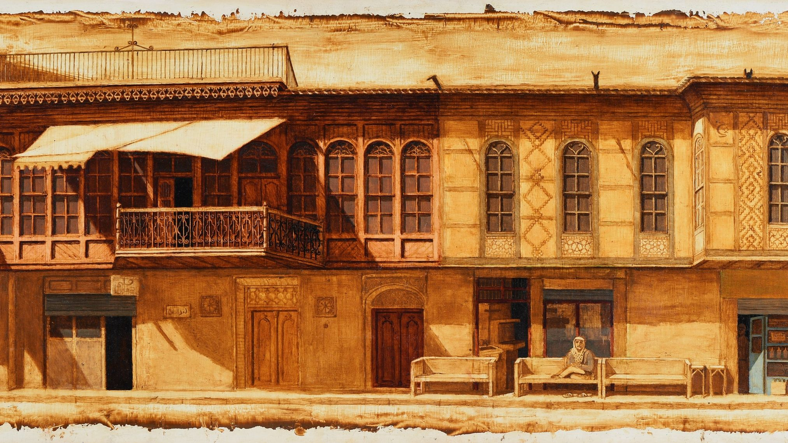
The second Title Unknown, dated 1966–1983, demonstrates a very different visual approach from the darker 1962 painting. Here, Selim presents an extended architectural façade across a horizontal composition. The work is dominated by warm golden-brown and ochre colours, creating a close visual relationship between the architecture and the surrounding surface.
The building is carefully divided into multiple sections. Rows of windows, wooden doors, balconies, railings, decorative panels, and covered openings create a complex architectural rhythm. The upper level contains repeated arched windows and elaborate details, while the lower level is defined by doors, shop-like openings, benches, and darker rectangular areas. Although the architecture stretches continuously across the painting, differences in window shapes and decorative patterns give individual sections their own identity.
A small human figure positioned toward the lower-right portion of the composition provides a sense of scale against the expansive façade. The restrained presence of the figure directs attention back toward the architecture itself. Rather than presenting the city primarily through crowds or dramatic activity, Selim allows the buildings to carry the visual history of the place.
The restricted palette also distinguishes this work from the 1962 painting. Browns, ochres, creams, and dark outlines dominate the composition, while the surface contains visible tonal variations. Decorative elements are rendered carefully but remain integrated into the larger structure rather than functioning as isolated details. The long horizontal format further emphasizes the idea of looking continuously along a street.
Selim’s architectural paintings became particularly significant because they coincided with a period of extensive urban transformation. Her interest was not simply in reproducing individual buildings but in recording and interpreting the visual character of Baghdad through her own artistic language. As Mathaf notes, the redevelopment of the city exposed previously hidden aspects of old Baghdad, providing Selim with new views of buildings and neighbourhoods that became central to this phase of her practice.
Together, these two works demonstrate the range of Selim’s artistic language. The 1962 work transforms figures and elements of the surrounding environment into dark, simplified, almost symbolic forms, while the later architectural work approaches Baghdad through close observation of its buildings and decorative structures. Despite their visual differences, both demonstrate Selim’s sustained attention to place and to the transformation of observed subjects through colour, pattern, line, and geometry.
Selim continued to paint after leaving Baghdad for the United Kingdom in 1971. Mathaf records that she returned to earlier sketches of Baghdad’s houses and reworked views of streets from new perspectives. Her practice therefore continued to preserve a connection with the city long after she had left it. Later environments provided new architectural subjects, but Baghdad remained an important presence within the development of her work.
توضح لوحة عنوان غير معروف الثانية، المؤرخة بين عامي 1966 و1983، نهجاً بصرياً مختلفاً بصورة واضحة عن لوحة عام 1962 الأكثر قتامة. تقدم سليم هنا واجهة معمارية ممتدة عبر تكوين أفقي. وتسيطر على العمل ألوان ذهبية بنية ودرجات دافئة من المغرة، مما يخلق علاقة بصرية وثيقة بين العمارة والسطح المحيط بها.
ينقسم المبنى بعناية إلى عدة أقسام. وتخلق صفوف النوافذ والأبواب الخشبية والشرفات والدرابزينات والألواح الزخرفية والفتحات المغطاة إيقاعاً معمارياً معقداً. ويحتوي المستوى العلوي على نوافذ مقوسة متكررة وتفاصيل دقيقة، بينما يتحدد المستوى السفلي من خلال الأبواب والفتحات الشبيهة بواجهات المتاجر والمقاعد والمساحات المستطيلة الداكنة. وعلى الرغم من امتداد العمارة بصورة متصلة عبر اللوحة، فإن الاختلافات في أشكال النوافذ والأنماط الزخرفية تمنح كل قسم هويته الخاصة.
توفر شخصية بشرية صغيرة تقع في الجزء السفلي الأيمن من التكوين إحساساً بالحجم أمام الواجهة الواسعة. ويوجه الحضور المحدود للشخصية الانتباه مرة أخرى نحو العمارة نفسها. وبدلاً من تقديم المدينة بصورة أساسية من خلال الحشود أو النشاط الدرامي، تسمح سليم للمباني بأن تحمل التاريخ البصري للمكان.
كما تميز لوحة الألوان المحدودة هذا العمل عن لوحة عام 1962. إذ تهيمن درجات البني والمغرة والكريمي والخطوط الخارجية الداكنة على التكوين، بينما يحتوي السطح على اختلافات لونية واضحة. وتُنفذ العناصر الزخرفية بعناية، لكنها تظل مندمجة في البنية الأكبر بدلاً من أن تعمل كتفاصيل منفصلة. ويعزز الشكل الأفقي الطويل أيضاً فكرة النظر بصورة متواصلة على امتداد شارع.
اكتسبت لوحات سليم المعمارية أهمية خاصة لأنها تزامنت مع فترة من التحول العمراني الواسع. ولم يقتصر اهتمامها على إعادة إنتاج مبانٍ منفردة، بل امتد إلى توثيق الطابع البصري لبغداد وتفسيره من خلال لغتها الفنية الخاصة. وكما يشير متحف، كشفت إعادة تطوير المدينة عن جوانب كانت مخفية سابقاً من بغداد القديمة، وأتاحت لسليم مشاهد جديدة للمباني والأحياء أصبحت محورية في هذه المرحلة من ممارستها الفنية.
توضح هاتان اللوحتان معاً مدى تنوع اللغة الفنية لدى سليم. يحول عمل عام 1962 الشخصيات وعناصر البيئة المحيطة إلى أشكال داكنة ومبسطة وشبه رمزية، بينما يتناول العمل المعماري اللاحق بغداد من خلال الملاحظة الدقيقة لمبانيها وبناها الزخرفية. وعلى الرغم من اختلافهما البصري، يكشف العملان عن اهتمام سليم المستمر بالمكان وتحويل الموضوعات المرصودة من خلال اللون والنمط والخط والهندسة.
واصلت سليم الرسم بعد مغادرتها بغداد إلى المملكة المتحدة عام 1971. ويسجل متحف أنها عادت إلى رسوماتها السابقة لمنازل بغداد وأعادت معالجة مشاهد الشوارع من زوايا جديدة. وهكذا استمرت ممارستها في الحفاظ على صلة بالمدينة بعد فترة طويلة من مغادرتها. وقد وفرت البيئات اللاحقة موضوعات معمارية جديدة، لكن بغداد ظلت حضوراً مهماً في تطور أعمالها.
Lorna Selim participated actively in Baghdad’s artistic community throughout the 1950s, 1960s, and early 1970s. She exhibited with Faiq Hassan’s Pioneers group and, following the establishment of the Baghdad Modern Art Group in 1951, participated in exhibitions associated with the group. She also regularly participated in exhibitions of the Iraqi Artists’ Society.
Her early exhibition activity included the first exhibition of the Baghdad Modern Art Group in 1951; the Ibn Sina Festival art exhibition in Baghdad in 1952, where eight of her works were shown; the third Baghdad Modern Art Group exhibition in 1954; a group exhibition of Iraqi artists at the British Council in 1956; and the Baghdad Exhibition of Painting and Sculpture at the Mansour Club that same year. In 1957, four of her works were included in the Contemporary Iraqi Art exhibition at the UNESCO Hall in Beirut, followed by participation in another Baghdad Exhibition of Painting and Sculpture at the Mansour Club in 1958.
By 1964, Selim had produced an extensive body of work recording Baghdad’s old houses and architecture. That year she held a one-person exhibition at Ea Gallery in the Fine Arts Museum of Baghdad. In 1966, the Calouste Gulbenkian Foundation awarded Selim and Kadhim Haider gold medals in recognition of their artistic work.
Her relationship with Baghdad continued after she returned to the United Kingdom in 1971. In 1986, Selim returned to Baghdad as an honoured guest of the Baghdad International Art Festival. In 1988, after moving to Wales and developing new architectural subjects, she exhibited a watercolour of Chepstow Castle in the Royal Watercolour Society’s summer exhibition.
شاركت لورنا سليم بنشاط في المجتمع الفني في بغداد طوال خمسينيات وستينيات وأوائل سبعينيات القرن العشرين. وعرضت أعمالها مع جماعة الرواد التابعة لفائق حسن، كما شاركت بعد تأسيس جماعة بغداد للفن الحديث عام 1951 في المعارض المرتبطة بالجماعة. كذلك شاركت بانتظام في معارض جمعية الفنانين العراقيين.
شمل نشاطها المبكر في المعارض أول معرض لجماعة بغداد للفن الحديث عام 1951، ومعرض الفن ضمن مهرجان ابن سينا في بغداد عام 1952، حيث عُرضت ثمانية من أعمالها، والمعرض الثالث لجماعة بغداد للفن الحديث عام 1954، ومعرضاً جماعياً للفنانين العراقيين في المجلس الثقافي البريطاني عام 1956، ومعرض بغداد للرسم والنحت في نادي المنصور في العام نفسه. وفي عام 1957، أُدرجت أربعة من أعمالها ضمن معرض الفن العراقي المعاصر في قاعة اليونسكو في بيروت، ثم شاركت في معرض آخر للرسم والنحت في نادي المنصور في بغداد عام 1958.
بحلول عام 1964، كانت سليم قد أنجزت مجموعة واسعة من الأعمال التي توثق منازل بغداد القديمة وعمارتها. وفي ذلك العام أقامت معرضاً فردياً في غاليري إي إيه في متحف الفنون الجميلة في بغداد. وفي عام 1966، منحت مؤسسة كالوست غولبنكيان سليم وكاظم حيدر ميداليتين ذهبيتين تقديراً لأعمالهما الفنية.
استمرت علاقتها ببغداد بعد عودتها إلى المملكة المتحدة عام 1971. وفي عام 1986، عادت سليم إلى بغداد بوصفها ضيفة شرف في مهرجان بغداد الدولي للفنون. وفي عام 1988، وبعد انتقالها إلى ويلز وتطوير موضوعات معمارية جديدة، عرضت لوحة مائية لقلعة تشيبستو في المعرض الصيفي للجمعية الملكية للألوان المائية.
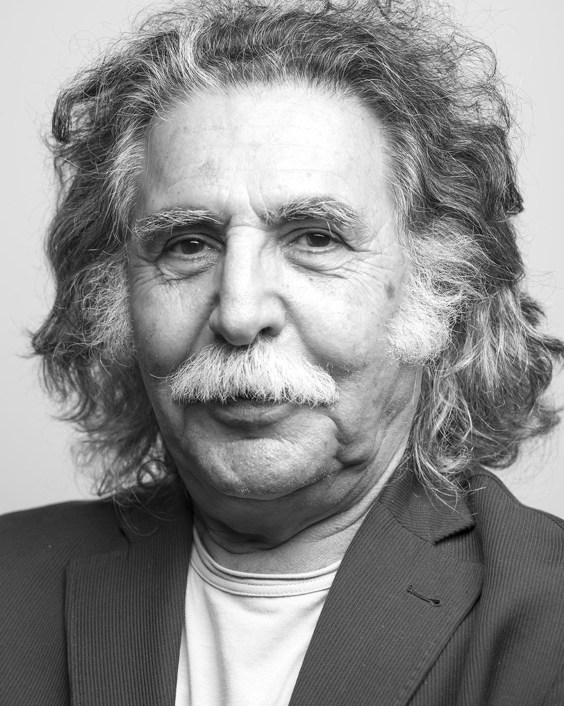
| Artist | Dia al-Azzawi |
|---|---|
| Year | 1939 |
Dia al-Azzawi developed an artistic practice that moves between the histories of ancient Iraq, literature, contemporary political events, and modern experimentation with colour and form. Born in Baghdad in 1939, al-Azzawi studied archaeology at the College of Arts in Baghdad, graduating in 1962, before completing his studies at the Institute of Fine Art in 1964. His archaeological education introduced him closely to objects in the Iraq Museum and contributed to his understanding of ancient Iraqi art as part of a continuing visual history rather than simply as archaeological material.
During the early stages of his career, al-Azzawi drew on a wide variety of sources. These included Sumerian sculpture, popular culture, rugs, talismans, shrines, and narratives such as the Epic of Gilgamesh and stories surrounding Imam Hussein. Mathaf notes that the wide, hollow eyes and tubular bodies of Sumerian figures became especially important to his representation of the human form. These historical sources were not simply repeated in his paintings. Instead, al-Azzawi transformed them into a modern visual language through simplified bodies, geometric structures, symbols, strong outlines, and increasingly expressive areas of colour.
Al-Azzawi’s interest in legends became particularly important during the 1960s. Mathaf explains that he regarded popular stories as a source of narrative and figurative concepts through which contemporary experiences could be expressed. Rather than illustrating stories literally, al-Azzawi concentrated on the themes and ideas contained within them. The Epic of Gilgamesh became one of the most significant sources in this early development.
طوّر ضياء العزاوي ممارسة فنية تتنقل بين تاريخ العراق القديم والأدب والأحداث السياسية المعاصرة والتجريب الحديث في اللون والشكل. وُلد العزاوي في بغداد عام 1939، ودرس علم الآثار في كلية الآداب في بغداد وتخرج عام 1962، قبل أن يكمل دراسته في معهد الفنون الجميلة عام 1964. وقد أتاحت له دراسته للآثار التعرف عن قرب على مقتنيات المتحف العراقي، وأسهمت في تشكيل فهمه للفن العراقي القديم باعتباره جزءاً من تاريخ بصري مستمر، وليس مجرد مادة أثرية.
في المراحل الأولى من مسيرته، استلهم العزاوي مجموعة واسعة من المصادر، من بينها النحت السومري والثقافة الشعبية والسجاد والتمائم والمزارات، إضافة إلى روايات مثل ملحمة جلجامش والقصص المرتبطة بالإمام الحسين. ويشير متحف إلى أن العيون الواسعة المجوفة والأجساد الأنبوبية في الشخصيات السومرية أصبحت ذات أهمية خاصة في طريقة تمثيله للجسد البشري. ولم يكرر العزاوي هذه المصادر التاريخية ببساطة في لوحاته، بل أعاد صياغتها ضمن لغة بصرية حديثة من خلال الأجساد المبسطة والبنى الهندسية والرموز والخطوط الخارجية القوية والمساحات اللونية المتزايدة في تعبيريتها.
أصبح اهتمام العزاوي بالأساطير والحكايات أكثر أهمية خلال ستينيات القرن العشرين. ويوضح متحف أنه نظر إلى الحكايات الشعبية باعتبارها مصدراً للمفاهيم السردية والتشخيصية التي يمكن من خلالها التعبير عن التجارب المعاصرة. وبدلاً من تصوير القصص بصورة حرفية، ركز العزاوي على الموضوعات والأفكار التي تحملها. وأصبحت ملحمة جلجامش واحدة من أهم المصادر في هذه المرحلة المبكرة من تطوره الفني.
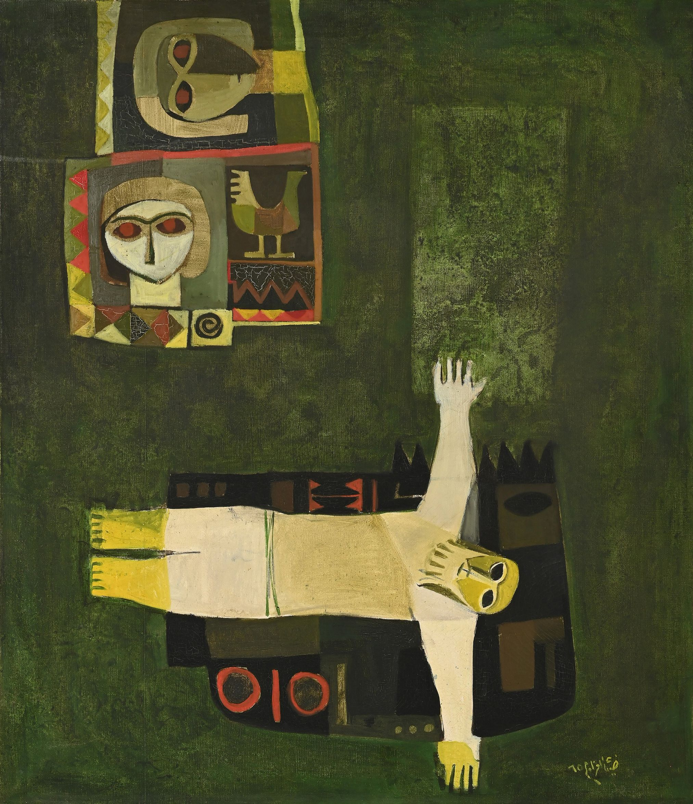
Ishtar, My Love (1965) belongs to this period of experimentation. The painting is dominated by a deep green field against which several simplified figurative and geometric elements appear. Instead of constructing a conventional scene with a clear foreground and background, al-Azzawi places the forms within a flattened pictorial space. This allows the human body, geometric motifs, and smaller symbolic elements to function together as parts of the same composition.
The largest figure stretches horizontally across the lower half of the painting. The pale body is dramatically simplified, with rectangular legs extending toward the left and one arm raised vertically into the green space. The head turns downward toward the lower right and contains two large dark eyes. These enlarged eyes are particularly noticeable when considered alongside Mathaf’s observation that al-Azzawi repeatedly drew inspiration from the wide-eyed forms of Sumerian sculpture.
Around the figure, al-Azzawi places several rectangular structures containing smaller faces, shapes, and decorative elements. In the upper-left portion, two framed faces are stacked vertically, while smaller geometric motifs appear immediately below. The central body itself rests against darker blocks containing circles, triangles, and repeated linear details. Yellow, red, black, cream, and muted brown interrupt the dominant dark green background and organize the composition through concentrated areas of colour.
The relationship between the work and ancient Iraqi culture is especially important. The Metropolitan Museum of Art records that al-Azzawi began producing works inspired by the Epic of Gilgamesh during this period after the Iraqi archaeologist Taha Baqir introduced him to the epic in 1965. His related Gilgamesh studies incorporated elements of Sumerian art alongside geometric motifs from contemporary Iraqi carpets and modern approaches to figuration.
The painting therefore brings different periods of visual culture into conversation. Ancient references, modern abstraction, familiar geometric patterns, and the human figure occupy the same pictorial field. The result is neither a reconstruction of ancient imagery nor a straightforward illustration of a literary narrative. Instead, al-Azzawi uses these sources to construct a distinctly modern image.
By the late 1960s and 1970s, the relationship between art, contemporary history, and political experience became increasingly important within al-Azzawi’s practice. In 1969, he wrote the manifesto The New Vision, which Mathaf describes as articulating a new relationship between art and politics after the 1967 Six-Day War. His subsequent work engaged more directly with contemporary political events while continuing to use the human figure as one of its central visual forms.
This development can be seen particularly clearly in the works associated with Human States. Mathaf explains that the forms of struggle and restraint that al-Azzawi had developed in earlier drawings became the basis for the Human States paintings, produced in response to the Iraqi government’s war against the Kurdish population in northern Iraq in 1974–1975.
تنتمي لوحة عشتار حبيبتي (1965) إلى هذه المرحلة من التجريب. تهيمن على اللوحة مساحة خضراء داكنة تظهر أمامها عدة عناصر تشخيصية وهندسية مبسطة. وبدلاً من بناء مشهد تقليدي ذي مقدمة وخلفية واضحتين، يضع العزاوي الأشكال داخل مساحة تصويرية مسطحة. ويسمح ذلك للجسد البشري والزخارف الهندسية والعناصر الرمزية الأصغر بأن تعمل معاً كأجزاء من تكوين واحد.
تمتد أكبر شخصية أفقياً عبر النصف السفلي من اللوحة. وقد اختُزل الجسد الفاتح بصورة واضحة، مع ساقين مستطيلتين تمتدان نحو اليسار وذراع واحدة ترتفع عمودياً داخل المساحة الخضراء. يتجه الرأس نحو الأسفل باتجاه الجانب الأيمن، ويحتوي على عينين كبيرتين داكنتين. وتصبح هاتان العينان المتضخمتان لافتتين بصورة خاصة عند النظر إليهما إلى جانب ملاحظة متحف بأن العزاوي استلهم مراراً الأشكال ذات العيون الواسعة في النحت السومري.
يضع العزاوي حول الشخصية عدداً من البنى المستطيلة التي تحتوي على وجوه وأشكال وعناصر زخرفية أصغر. وفي الجزء العلوي الأيسر، يظهر وجهان داخل إطارين موضوعين أحدهما فوق الآخر، بينما تظهر زخارف هندسية أصغر أسفلهما مباشرة. ويستند الجسد المركزي نفسه إلى كتل داكنة تحتوي على دوائر ومثلثات وتفاصيل خطية متكررة. وتقطع درجات الأصفر والأحمر والأسود والكريمي والبني الهادئ الخلفية الخضراء الداكنة المهيمنة، وتنظم التكوين من خلال مساحات لونية مركزة.
تكتسب العلاقة بين العمل والثقافة العراقية القديمة أهمية خاصة. ويذكر متحف المتروبوليتان للفنون أن العزاوي بدأ خلال هذه الفترة بإنتاج أعمال مستوحاة من ملحمة جلجامش بعد أن عرّفه عالم الآثار العراقي طه باقر على الملحمة عام 1965. وقد جمعت دراساته المرتبطة بجلجامش بين عناصر من الفن السومري والزخارف الهندسية المستمدة من السجاد العراقي المعاصر والمقاربات الحديثة للتشخيص.
وهكذا تجمع اللوحة فترات مختلفة من الثقافة البصرية داخل حوار واحد. فالمراجع القديمة والتجريد الحديث والأنماط الهندسية المألوفة والجسد البشري تشترك في المجال التصويري نفسه. والنتيجة ليست إعادة بناء للصور القديمة ولا توضيحاً مباشراً لسرد أدبي، بل يستخدم العزاوي هذه المصادر لبناء صورة حديثة ومميزة.
بحلول أواخر الستينيات والسبعينيات، أصبحت العلاقة بين الفن والتاريخ المعاصر والتجربة السياسية ذات أهمية متزايدة في ممارسة العزاوي الفنية. وفي عام 1969، كتب بيان الرؤية الجديدة، الذي يصفه متحف بأنه عبّر عن علاقة جديدة بين الفن والسياسة بعد حرب الأيام الستة عام 1967. وانخرطت أعماله اللاحقة بصورة أكثر مباشرة مع الأحداث السياسية المعاصرة، مع استمرار الجسد البشري بوصفه أحد أشكالها البصرية المركزية.
يظهر هذا التطور بوضوح خاص في الأعمال المرتبطة بسلسلة الحالات الإنسانية. ويوضح متحف أن أشكال الصراع والتقييد التي طورها العزاوي في رسومات سابقة أصبحت أساساً للوحات الحالات الإنسانية، التي أُنتجت استجابة للحرب التي خاضتها الحكومة العراقية ضد السكان الأكراد في شمال العراق خلال عامي 1974 و1975.
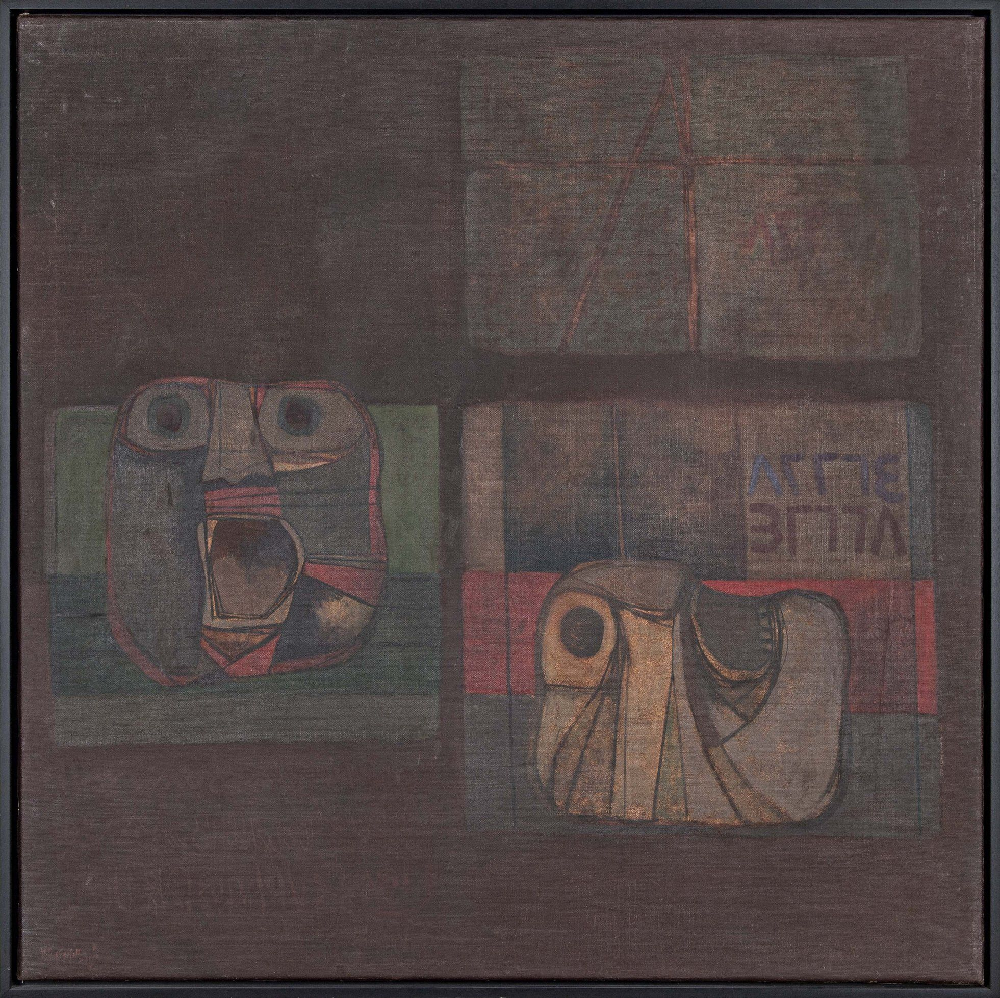
In Human States (1975), the composition is considerably darker and more restrained than Ishtar, My Love. Large areas of brown, grey, muted green, black, and dark red create a subdued surface. Two heavily abstracted forms occupy rectangular zones across the lower portion of the painting, while another outlined rectangular structure appears toward the upper right.
The form on the left resembles a frontal face reorganized through curved and geometric lines. Large circular eyes dominate its upper section, while the lower part is divided into overlapping planes. Toward the lower right, a second form is more difficult to resolve. Curved outlines suggest another body or head-like structure, yet the figure appears compressed and fragmented into a series of overlapping planes.
Lines and blocks divide the painting into separate areas without completely isolating them from one another. A horizontal muted-red band crosses the central region, linking several of these otherwise distinct sections. Small areas of blue, red, brown, and green emerge from the predominantly dark palette, while thin outlines establish the boundaries of the fragmented figures.
The subdued colour and fragmented human forms create a very different visual experience from the clearer body presented in Ishtar, My Love. The body is no longer simply simplified into a recognizable modernist figure. Instead, recognizable features appear broken apart, enclosed, or compressed within the surrounding geometric structures. This transformation of the figure corresponds with the wider development Mathaf describes in al-Azzawi’s politically engaged work of the 1970s, when forms of struggle and restraint became increasingly prominent.
The title Human States reinforces the centrality of human experience to this period of the artist’s practice. Rather than describing one specific individual, the painting places the human form within a broader visual language of fragmentation and restriction. Different parts of the body become signs within the composition, allowing al-Azzawi to approach contemporary experience through abstraction instead of a conventionally narrative scene.
After 1983, al-Azzawi’s practice underwent another development. Mathaf notes that many of the formal elements established during the previous decade increasingly began to follow a visual logic of their own. Colour became particularly important, accompanied by a shift from oil paint toward acrylic. At the same time, al-Azzawi continued working across different forms, including painting, sculpture, printmaking, literature, and the artist books he called dafatir.
في لوحة الحالات الإنسانية (1975)، يبدو التكوين أكثر قتامة وتحفظاً بصورة ملحوظة مقارنة بلوحة عشتار حبيبتي. وتشكل المساحات الكبيرة من البني والرمادي والأخضر الهادئ والأسود والأحمر الداكن سطحاً ذا طابع خافت. ويشغل شكلان شديدا التجريد مناطق مستطيلة عبر الجزء السفلي من اللوحة، بينما يظهر بناء مستطيل آخر محدد الخطوط باتجاه الجزء العلوي الأيمن.
يشبه الشكل الموجود على اليسار وجهاً أمامياً أعيد تنظيمه من خلال خطوط منحنية وهندسية. تهيمن عينان دائريتان كبيرتان على الجزء العلوي، بينما ينقسم الجزء السفلي إلى مستويات متداخلة. وفي الجزء السفلي الأيمن، يصعب تحديد الشكل الثاني بصورة أكثر وضوحاً. توحي الخطوط المنحنية بجسد آخر أو بنية تشبه الرأس، إلا أن الشخصية تبدو مضغوطة ومجزأة إلى سلسلة من المستويات المتداخلة.
تقسم الخطوط والكتل اللوحة إلى مساحات منفصلة من دون عزلها تماماً عن بعضها بعضاً. ويعبر شريط أفقي أحمر هادئ المنطقة المركزية، رابطاً بين عدة أقسام تبدو منفصلة في ما عدا ذلك. وتظهر مساحات صغيرة من الأزرق والأحمر والبني والأخضر ضمن لوحة الألوان الداكنة في الغالب، بينما تحدد الخطوط الرفيعة حدود الشخصيات المجزأة.
يخلق اللون الخافت والأشكال البشرية المجزأة تجربة بصرية مختلفة تماماً عن الجسد الأكثر وضوحاً في عشتار حبيبتي. لم يعد الجسد مجرد شخصية حداثية مبسطة يمكن التعرف عليها، بل تبدو ملامحه المألوفة متكسرة أو محاطة أو مضغوطة داخل البنى الهندسية المحيطة. ويتوافق هذا التحول في الشخصية مع التطور الأوسع الذي يصفه متحف في أعمال العزاوي ذات الانخراط السياسي خلال السبعينيات، حين أصبحت أشكال الصراع والتقييد أكثر بروزاً.
يعزز عنوان الحالات الإنسانية مركزية التجربة البشرية في هذه المرحلة من ممارسة الفنان. وبدلاً من وصف فرد محدد، تضع اللوحة الشكل البشري داخل لغة بصرية أوسع من التجزئة والتقييد. وتتحول أجزاء مختلفة من الجسد إلى علامات داخل التكوين، مما يسمح للعزاوي بمعالجة التجربة المعاصرة من خلال التجريد بدلاً من المشهد السردي التقليدي.
بعد عام 1983، شهدت ممارسة العزاوي تطوراً آخر. ويشير متحف إلى أن العديد من العناصر الشكلية التي تأسست خلال العقد السابق بدأت بصورة متزايدة تتبع منطقاً بصرياً خاصاً بها. وأصبح اللون ذا أهمية خاصة، بالتزامن مع الانتقال من الرسم الزيتي نحو الأكريليك. وفي الوقت نفسه، واصل العزاوي العمل عبر أشكال فنية مختلفة، من بينها الرسم والنحت والطباعة والأدب وكتب الفنان التي أطلق عليها اسم الدفاتر.
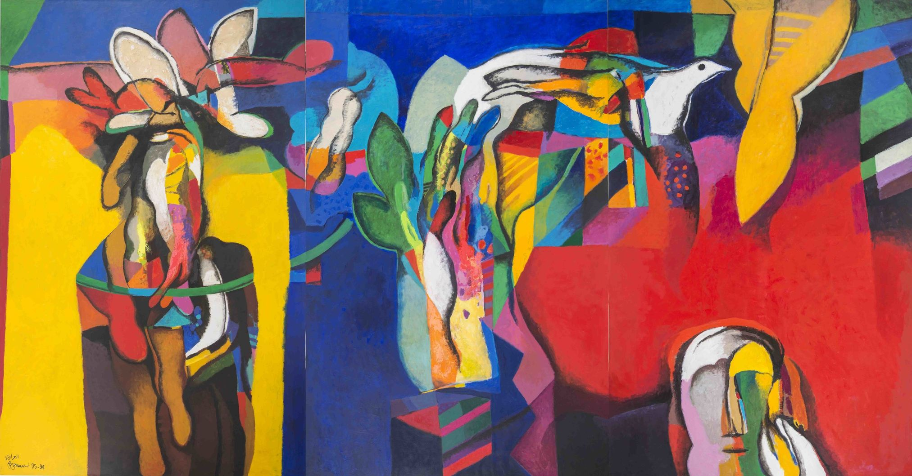
The monumental Western Bird (1995–1996) demonstrates the scale and intensity that colour could achieve within al-Azzawi’s later painting. Measuring 300 × 580 cm, the work extends horizontally across an unusually broad surface. Bright yellow, red, blue, green, turquoise, pink, orange, black, and white are distributed across the composition in large adjoining fields.
A prominent white bird stretches horizontally across the upper central section. Its elongated body and wings move across areas of blue, red, yellow, and green, while a small dark eye and pointed beak maintain the recognizable form of the bird. Elsewhere, organic shapes resembling leaves or plant forms rise vertically through the centre, intersecting with geometric blocks of colour.
The left side contains a particularly dense arrangement of overlapping shapes. Rounded white, pink, orange, green, brown, and black forms are gathered together and enclosed by a curving green line. By contrast, the right side is dominated by a much larger red area bordered by yellow, dark blue, and black. A pale curved form appears in the lower-right corner, adding another figurative element to the otherwise expansive coloured field.
Rather than relying on conventional perspective, al-Azzawi organizes the composition through the relationships between adjoining colours and shapes. Forms overlap, interrupt, and pass through one another. Large flat colour fields exist beside smaller patterned areas, creating continuous movement across the painting’s considerable width. The bird remains recognizable, but its body is integrated into the surrounding abstraction rather than separated from it.
Compared with the muted surface of Human States, Western Bird demonstrates a dramatic expansion of colour. The restrained browns, greens, and greys of the earlier work give way to large saturated fields of primary and secondary colours. The comparison illustrates how al-Azzawi could retain recognizable figures and symbols while allowing colour and abstract form to take an increasingly prominent role within the construction of the image.
Viewed together, these three works provide different points within al-Azzawi’s changing artistic language. Ishtar, My Love demonstrates the importance of ancient Iraqi culture, mythology, and the transformation of the human figure during the early part of his practice. Human States belongs to a period in which fragmented and restrained figures became connected with al-Azzawi’s engagement with contemporary political events. Western Bird, produced two decades later, presents a much larger and more intensely coloured pictorial environment.
Despite these differences, several visual ideas remain connected across the works. Human, animal, and symbolic forms are repeatedly simplified and reorganized rather than represented naturalistically. Geometry divides and structures the painted surface, while recognizable subjects coexist with abstract forms. Across the decades represented by these three paintings, al-Azzawi continually reshaped these elements through changes in colour, scale, subject matter, and medium.
Mathaf describes al-Azzawi’s practice as consistently characterized by a relationship between text and image beginning in the 1960s. Over time, this relationship expanded through literature, poetry, printmaking, painting, sculpture, and the dafatir. The resulting body of work connects different moments of history while continually reconsidering how visual forms can respond to contemporary experience.
توضح لوحة الطائر الغربي الضخمة (1995–1996) الحجم والكثافة اللونية التي وصلت إليها أعمال العزاوي اللاحقة. يبلغ قياس العمل 300 × 580 سم، ويمتد أفقياً عبر سطح واسع بصورة غير معتادة. وتتوزع درجات زاهية من الأصفر والأحمر والأزرق والأخضر والفيروزي والوردي والبرتقالي والأسود والأبيض عبر التكوين ضمن مساحات كبيرة متجاورة.
يمتد طائر أبيض بارز أفقياً عبر الجزء العلوي الأوسط. ويتحرك جسده الممدود وجناحاه عبر مساحات من الأزرق والأحمر والأصفر والأخضر، بينما تحافظ عين داكنة صغيرة ومنقار مدبب على الشكل القابل للتعرف للطائر. وفي مواضع أخرى، ترتفع أشكال عضوية تشبه الأوراق أو النباتات عمودياً عبر الوسط، وتتقاطع مع كتل هندسية من اللون.
يحتوي الجانب الأيسر على ترتيب كثيف بصورة خاصة من الأشكال المتداخلة. وتتجمع أشكال دائرية باللون الأبيض والوردي والبرتقالي والأخضر والبني والأسود، ويحوطها خط أخضر منحنٍ. وعلى النقيض من ذلك، تهيمن على الجانب الأيمن مساحة حمراء أكبر بكثير تحدها درجات الأصفر والأزرق الداكن والأسود. ويظهر شكل منحني فاتح في الزاوية السفلية اليمنى، مضيفاً عنصراً تشخيصياً آخر إلى المجال اللوني الواسع.
بدلاً من الاعتماد على المنظور التقليدي، ينظم العزاوي التكوين من خلال العلاقات بين الألوان والأشكال المتجاورة. تتداخل الأشكال وتقطع بعضها بعضاً وتعبر من خلالها. وتوجد المساحات اللونية الكبيرة والمسطحة إلى جانب مناطق أصغر ذات أنماط، مما يخلق حركة مستمرة عبر العرض الكبير للوحة. ويبقى الطائر قابلاً للتعرف، إلا أن جسده يندمج في التجريد المحيط بدلاً من الانفصال عنه.
بالمقارنة مع السطح الخافت في الحالات الإنسانية، تُظهر الطائر الغربي توسعاً دراماتيكياً في استخدام اللون. وتحل المساحات الكبيرة والمشبعة بالألوان الأساسية والثانوية محل درجات البني والأخضر والرمادي المقيدة في العمل السابق. وتوضح المقارنة كيف استطاع العزاوي الاحتفاظ بالشخصيات والرموز القابلة للتعرف، مع منح اللون والشكل التجريدي دوراً متزايد الأهمية في بناء الصورة.
تكشف هذه الأعمال الثلاثة، عند النظر إليها معاً، عن مراحل مختلفة في تطور اللغة الفنية للعزاوي. توضح عشتار حبيبتي أهمية الثقافة العراقية القديمة والأسطورة وتحول الجسد البشري خلال الجزء المبكر من ممارسته. وتنتمي الحالات الإنسانية إلى مرحلة ارتبطت فيها الشخصيات المجزأة والمقيدة بانخراط العزاوي في الأحداث السياسية المعاصرة. أما الطائر الغربي، التي أُنجزت بعد نحو عقدين، فتقدم بيئة تصويرية أكبر وأكثر كثافة لونية.
وعلى الرغم من هذه الاختلافات، تبقى عدة أفكار بصرية مترابطة عبر الأعمال. فالأشكال البشرية والحيوانية والرمزية تُبسط ويعاد تنظيمها مراراً بدلاً من تمثيلها بصورة طبيعية. وتقسم الهندسة سطح اللوحة وتنظمه، في حين تتعايش الموضوعات القابلة للتعرف مع الأشكال التجريدية. وعبر العقود التي تمثلها هذه اللوحات الثلاث، واصل العزاوي إعادة تشكيل هذه العناصر من خلال التغيرات في اللون والحجم والموضوع والخامة.
يصف متحف ممارسة العزاوي بأنها اتسمت باستمرار بعلاقة بين النص والصورة منذ ستينيات القرن العشرين. ومع مرور الوقت، توسعت هذه العلاقة عبر الأدب والشعر والطباعة والرسم والنحت والدفاتر. ويربط هذا النتاج الفني بين لحظات تاريخية مختلفة، مع إعادة النظر باستمرار في كيفية استجابة الأشكال البصرية للتجربة المعاصرة.
Dia al-Azzawi began exhibiting extensively during the 1960s. Mathaf records solo exhibitions at Al-Wasiti Gallery in Baghdad in 1965, Gallery One in Beirut in 1966, the Hall of the Iraqi Artists Society in Baghdad in 1967, and the National Museum of Modern Art in Baghdad in 1968 and 1969. His 1969 exhibitions also included presentations at Sultan Gallery in Kuwait and Gallery One in Beirut.
During the 1970s, his exhibition activity expanded across Iraq and internationally. Solo exhibitions included the National Gallery of Modern Art in Baghdad and Sultan Gallery in Kuwait in 1971, Raslan Gallery in Tripoli in 1973, Sultan Gallery and Contact Gallery in Beirut in 1974, and the National Gallery of Modern Art in Baghdad in 1975. Further solo exhibitions followed at Galerie Nadhar in Casablanca in 1976, Sultan Gallery in Kuwait in 1977, Patrick Seale Gallery in London in 1978, and Al-Riwaq Gallery in Baghdad in 1979.
The period surrounding Human States was particularly significant. Mathaf states that the Human States paintings were produced in response to the 1974–1975 war between the Iraqi government and the Kurdish population in northern Iraq. A separate 1975 Human States work documented by Bonhams was exhibited in Halat Insaniyya (Human States) at the National Gallery of Baghdad in 1975.
Al-Azzawi also participated in international group exhibitions and biennials. Mathaf records his participation in the First International Triennial in New Delhi in 1968, the Second Arab Art Biennial in Rabat and the Venice Biennale in 1976, the São Paulo Biennial in 1979, and numerous exhibitions dedicated to contemporary Iraqi and Arab art.
His later exhibition history reflects the increasingly international reach of his practice. Selected solo presentations included exhibitions at Galerie Claude Lemand in Paris, a retrospective at the Institut du Monde Arabe in Paris in 2001, and exhibitions at Meem Gallery in Dubai. In 2010, his work was included in Interventions at Mathaf: Arab Museum of Modern Art in Doha.
In 2016, Mathaf presented the solo exhibition “I am the cry, who will give voice to me?”. The exhibition forms part of a long exhibition history extending from Baghdad in the 1960s to institutions and galleries across the Arab world, Europe, and North America.
بدأ ضياء العزاوي عرض أعماله على نطاق واسع خلال ستينيات القرن العشرين. ويسجل متحف معارض فردية له في غاليري الواسطي في بغداد عام 1965، وغاليري وان في بيروت عام 1966، وقاعة جمعية الفنانين العراقيين في بغداد عام 1967، والمتحف الوطني للفن الحديث في بغداد عامي 1968 و1969. كما شملت معارضه في عام 1969 عروضاً في غاليري سلطان في الكويت وغاليري وان في بيروت.
خلال السبعينيات، توسع نشاطه في المعارض داخل العراق وعلى المستوى الدولي. وشملت معارضه الفردية المتحف الوطني للفن الحديث في بغداد وغاليري سلطان في الكويت عام 1971، وغاليري رسلان في طرابلس عام 1973، وغاليري سلطان وكونتاكت غاليري في بيروت عام 1974، والمتحف الوطني للفن الحديث في بغداد عام 1975. وتبعت ذلك معارض فردية أخرى في غاليري نادار في الدار البيضاء عام 1976، وغاليري سلطان في الكويت عام 1977، وباتريك سيل غاليري في لندن عام 1978، وغاليري الرواق في بغداد عام 1979.
كانت الفترة المرتبطة بأعمال الحالات الإنسانية ذات أهمية خاصة. ويذكر متحف أن لوحات الحالات الإنسانية أُنتجت استجابة للحرب بين الحكومة العراقية والسكان الأكراد في شمال العراق خلال عامي 1974 و1975. كما عُرض عمل منفصل من سلسلة الحالات الإنسانية يعود إلى عام 1975، وموثق لدى بونهامز، ضمن معرض حالات إنسانية في المتحف الوطني في بغداد عام 1975.
شارك العزاوي أيضاً في معارض جماعية وبيناليات دولية. ويسجل متحف مشاركته في الترينالي الدولي الأول في نيودلهي عام 1968، وبينالي الفن العربي الثاني في الرباط وبينالي البندقية عام 1976، وبينالي ساو باولو عام 1979، إضافة إلى العديد من المعارض المخصصة للفن العراقي والعربي المعاصر.
يعكس تاريخ معارضه اللاحق الانتشار الدولي المتزايد لممارسته الفنية. وشملت عروضه الفردية المختارة معارض في غاليري كلود ليمان في باريس، ومعرضاً استعادياً في معهد العالم العربي في باريس عام 2001، ومعارض في ميم غاليري في دبي. وفي عام 2010، أُدرجت أعماله في معرض تدخلات في متحف: المتحف العربي للفن الحديث في الدوحة.
في عام 2016، قدم متحف معرضه الفردي “أنا الصرخة، أي حنجرة تعيرني؟”. ويشكل هذا المعرض جزءاً من تاريخ طويل من المعارض يمتد من بغداد في ستينيات القرن العشرين إلى المؤسسات وصالات العرض في أنحاء العالم العربي وأوروبا وأمريكا الشمالية.
| Artist | Shakir Hassan al-Said |
|---|---|
| Year | 1925-2004 |
Shakir Hassan Al Said was an important figure in the development of modern Iraqi art, whose practice moved between painting, theory, abstraction, spirituality, and experimentation with the physical surface of the artwork. Born in Samawah, Iraq, in 1925, Al Said studied social science before receiving a diploma in painting from the Institute of Fine Arts in Baghdad in 1954. He later continued his studies in Paris before returning to Baghdad, where his work became closely connected to debates surrounding Iraqi modernism and the relationship between modern artistic practice and cultural heritage.
Alongside Jewad Selim, Al Said was involved in the formation of the Baghdad Modern Art Group in 1951. The group sought ways in which contemporary art could engage with Iraqi cultural heritage while remaining connected with the development of modern art. Over the following decades, Al Said’s own practice continually changed. Figurative subjects and landscapes gradually gave way to geometry, abstraction, fragmented signs, writing, textured surfaces, and an increasing interest in the physical qualities of the artwork itself.
The earlier stages of Al Said’s practice retained recognizable human figures, landscapes, and architectural elements while increasingly simplifying them through colour and line. Rather than representing figures naturalistically, Al Said reduced their bodies into interconnected shapes and allowed different areas of colour to structure the composition.
كان شاكر حسن آل سعيد شخصية بارزة في تطور الفن العراقي الحديث، إذ تنقلت ممارسته بين الرسم والنظرية والتجريد والروحانية والتجريب في السطح المادي للعمل الفني. وُلد آل سعيد في السماوة بالعراق عام 1925، ودرس العلوم الاجتماعية قبل أن يحصل على دبلوم في الرسم من معهد الفنون الجميلة في بغداد عام 1954. ثم واصل دراسته في باريس قبل أن يعود إلى بغداد، حيث ارتبط عمله ارتباطاً وثيقاً بالنقاشات المحيطة بالحداثة العراقية والعلاقة بين الممارسة الفنية الحديثة والتراث الثقافي.
شارك آل سعيد، إلى جانب جواد سليم، في تأسيس جماعة بغداد للفن الحديث عام 1951. وسعت الجماعة إلى إيجاد سبل يمكن من خلالها للفن المعاصر أن يتفاعل مع التراث الثقافي العراقي مع بقائه مرتبطاً بتطور الفن الحديث. وخلال العقود التالية، واصلت ممارسة آل سعيد الفنية تحولها. فقد أفسحت الموضوعات التشخيصية والمناظر الطبيعية المجال تدريجياً للهندسة والتجريد والعلامات المجزأة والكتابة والأسطح ذات الملمس، إلى جانب اهتمام متزايد بالخصائص المادية للعمل الفني نفسه.
احتفظت المراحل المبكرة من ممارسة آل سعيد بشخصيات بشرية ومناظر طبيعية وعناصر معمارية قابلة للتعرف، مع تبسيطها بصورة متزايدة من خلال اللون والخط. وبدلاً من تمثيل الشخصيات بطريقة طبيعية، اختزل آل سعيد أجسادها إلى أشكال مترابطة، وسمح للمساحات اللونية المختلفة بتنظيم التكوين.
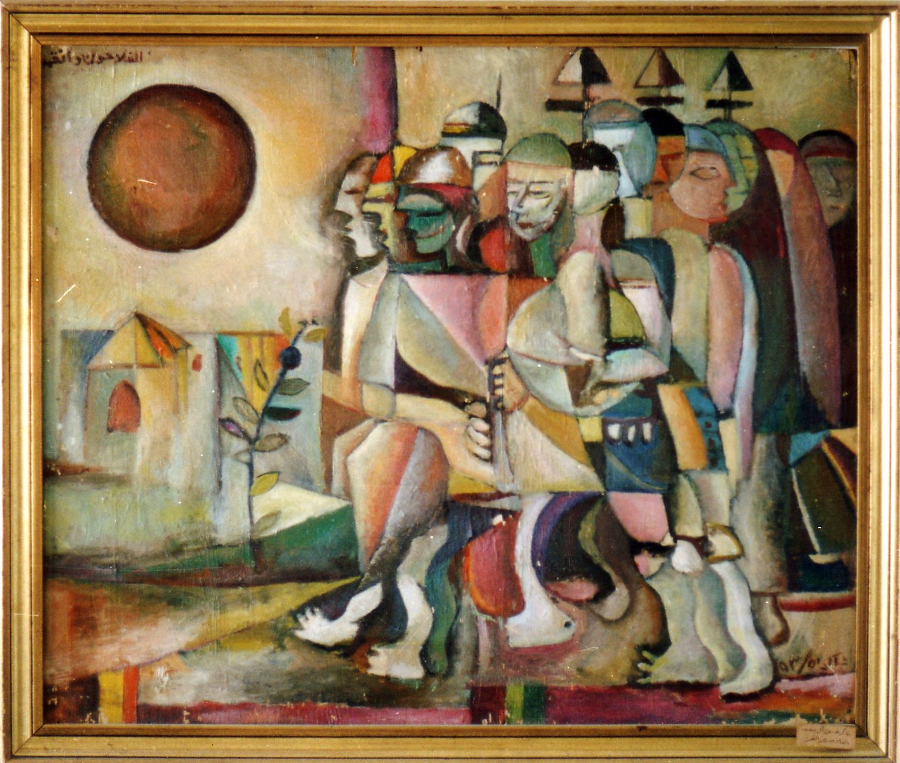
This approach can be seen in Title not known (Hassan Al Said 5). The Modern Art Iraq Archive describes the painting as a colour-filled scene containing reduced and tightly packed figures. Distinct fields of colour and, in places, heavy black outlines establish the boundaries between figures within the composition. A group occupies the right side of the canvas, while a simplified architectural structure, a vine, and a large copper-coloured disc appear toward the left.
The individual figures are difficult to separate completely from one another. Bodies and surrounding forms meet through overlapping areas of colour, making the group function almost as a single visual structure. Recognizable elements remain present, but representation is already being transformed by Al Said’s interest in simplification.
Rather than relying on depth and realistic modelling, colour and line become the main tools through which the picture is organized. This combination of recognizable subjects with increasingly abstract formal relationships anticipates the larger transformation that would occur throughout Al Said’s career.
Mathaf identifies the period between the 1950s and 1970s as an important stage in Al Said’s search for new forms of representation. During these decades, his practice moved away from landscape toward geometry and from representations of the body toward increasingly independent forms. The transformation did not happen immediately. Instead, recognizable subjects continued to appear while becoming progressively reduced through line, shape, and colour.
يمكن رؤية هذا النهج في لوحة عنوان غير معروف (حسن آل سعيد 5). يصف أرشيف الفن العراقي الحديث اللوحة بأنها مشهد غني بالألوان يحتوي على شخصيات مختزلة ومتراصة بإحكام. وتحدد المساحات اللونية الواضحة، وفي بعض المواضع الخطوط السوداء الثقيلة، الحدود بين الشخصيات داخل التكوين. وتشغل مجموعة من الشخصيات الجانب الأيمن من اللوحة، بينما يظهر باتجاه اليسار بناء معماري مبسط ونبتة متسلقة وقرص كبير بلون نحاسي.
يصعب فصل الشخصيات الفردية عن بعضها بصورة كاملة. إذ تلتقي الأجساد والأشكال المحيطة من خلال مساحات لونية متداخلة، مما يجعل المجموعة تعمل تقريباً كبنية بصرية واحدة. وتظل بعض العناصر قابلة للتعرف، إلا أن التمثيل بدأ بالفعل في التحول نتيجة اهتمام آل سعيد بالتبسيط.
بدلاً من الاعتماد على العمق والنمذجة الواقعية، يصبح اللون والخط الأداتين الرئيسيتين اللتين تُنظم من خلالهما الصورة. ويشير هذا الجمع بين الموضوعات القابلة للتعرف والعلاقات الشكلية المتجهة بصورة متزايدة نحو التجريد إلى التحول الأكبر الذي سيحدث طوال مسيرة آل سعيد الفنية.
يحدد متحف الفترة الممتدة بين خمسينيات وسبعينيات القرن العشرين باعتبارها مرحلة مهمة في بحث آل سعيد عن أشكال جديدة للتمثيل. خلال هذه العقود، ابتعدت ممارسته عن المنظر الطبيعي واتجهت نحو الهندسة، ومن تمثيل الجسد نحو أشكال تتمتع باستقلالية متزايدة. ولم يحدث هذا التحول بصورة فورية، بل استمرت الموضوعات القابلة للتعرف في الظهور، مع اختزالها تدريجياً من خلال الخط والشكل واللون.
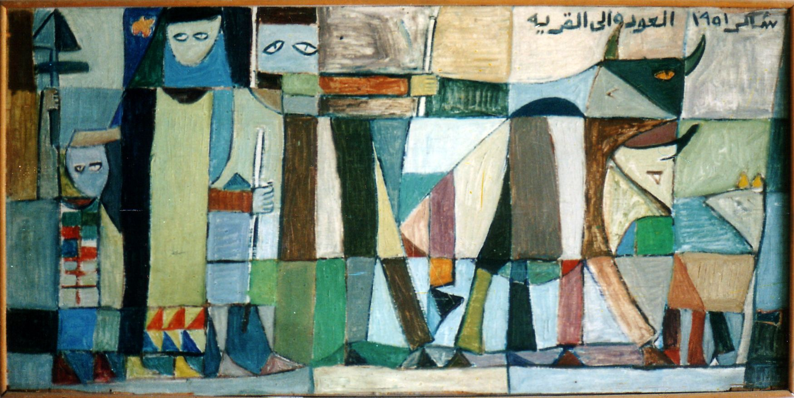
Title not known (Hassan Al Said 17) presents another stage within this development. The Modern Art Iraq Archive describes the work as an abstracted landscape containing a family, two cows, and a goat. A grid forms an underlying structure for the composition, with individual sections divided further into separate fields of colour.
The grid provides order while the figures resist clear definition. Al Said reduces the human and animal forms through line and colour until they become biomorphic shapes that only suggest their subjects. The distinction between figure, landscape, and abstract form consequently becomes increasingly uncertain.
This reduction is significant to Al Said’s wider development. Recognizable subjects have not completely disappeared, but they are no longer independent from the formal structure of the painting. Figures become shapes within a larger arrangement, allowing geometry and colour to share importance with the subject itself.
The painting therefore occupies a space between representation and abstraction. A viewer can still identify traces of a landscape and its inhabitants, while the grid, outlines, and fields of colour encourage the composition to be read as an arrangement of interconnected forms.
Al Said’s investigations eventually moved substantially beyond conventional figurative painting. Mathaf describes an increasing emphasis on physicality, scratched surfaces, traces, and the appearance of walls and manuscripts. The surface of the artwork itself became a subject of exploration rather than simply a support on which an image was represented.
In 1971, Al Said developed the concept of the “One Dimension.” Mathaf explains that the concept developed into both a philosophy and artistic practice concerned with moving beyond conventional ideas of space and time. His paintings increasingly incorporated surfaces resembling walls marked by scratches, traces, signs, and fragments.
تقدم لوحة عنوان غير معروف (حسن آل سعيد 17) مرحلة أخرى ضمن هذا التطور. ويصف أرشيف الفن العراقي الحديث العمل بأنه منظر طبيعي تجريدي يحتوي على عائلة وبقرتين وماعز. وتشكل شبكة هندسية البنية الأساسية للتكوين، مع تقسيم أقسامها إلى مساحات لونية منفصلة.
توفر الشبكة نوعاً من النظام، في حين تقاوم الشخصيات التحديد الواضح. ويختزل آل سعيد الأشكال البشرية والحيوانية من خلال الخط واللون حتى تصبح أشكالاً حيوية عضوية لا تفعل سوى الإيحاء بموضوعاتها. ونتيجة لذلك، يصبح التمييز بين الشخصية والمنظر الطبيعي والشكل التجريدي أكثر غموضاً.
يحظى هذا الاختزال بأهمية في التطور الأوسع لممارسة آل سعيد. فلم تختف الموضوعات القابلة للتعرف بصورة كاملة، لكنها لم تعد مستقلة عن البنية الشكلية للوحة. وتتحول الشخصيات إلى أشكال داخل ترتيب أكبر، مما يسمح للهندسة واللون بأن يتقاسما الأهمية مع الموضوع نفسه.
وهكذا تشغل اللوحة مساحة بين التمثيل والتجريد. فلا يزال بإمكان المشاهد التعرف على آثار لمنظر طبيعي وسكانه، بينما تشجع الشبكة والخطوط الخارجية والمساحات اللونية على قراءة التكوين باعتباره ترتيباً من الأشكال المترابطة.
انتقلت تجارب آل سعيد في النهاية إلى ما هو أبعد بكثير من الرسم التشخيصي التقليدي. ويصف متحف اهتماماً متزايداً بالمادية والأسطح المخدوشة والآثار ومظهر الجدران والمخطوطات. وأصبح سطح العمل الفني نفسه موضوعاً للاستكشاف بدلاً من أن يكون مجرد حامل تُعرض عليه الصورة.
في عام 1971، طور آل سعيد مفهوم “البعد الواحد”. ويوضح متحف أن هذا المفهوم تطور ليصبح فلسفة وممارسة فنية تهتمان بتجاوز الأفكار التقليدية حول المكان والزمان. وبدأت لوحاته تتضمن بصورة متزايدة أسطحاً تشبه الجدران التي تحمل الخدوش والآثار والعلامات والشظايا.
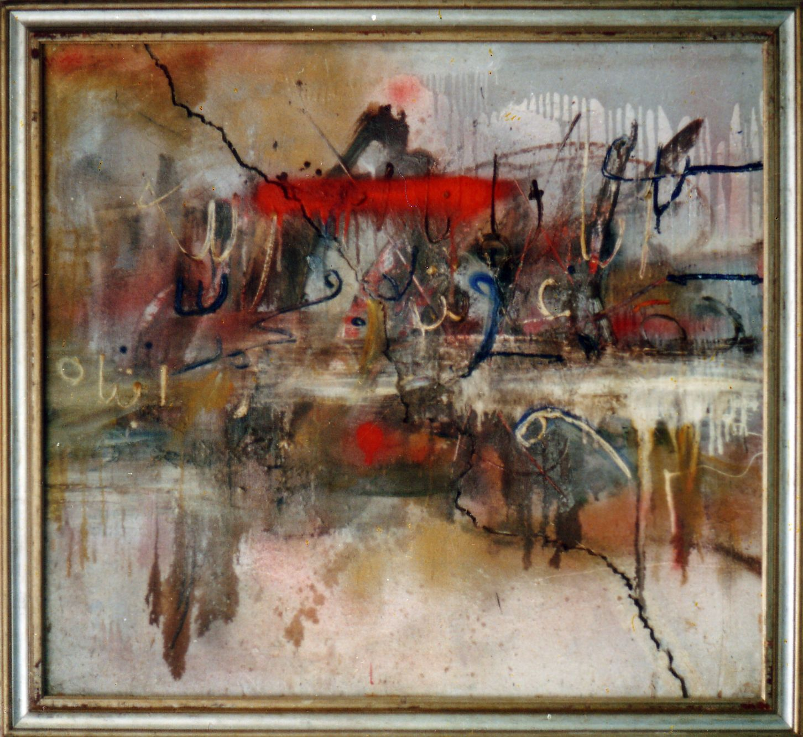
This emphasis on surface can be considered alongside Title not known (Hassan Al Said 19). The Modern Art Iraq Archive describes the composition as divided diagonally through its centre by a jagged fracture. The work uses mixed media, with materials that drip, fade, and smear across the surface.
Unlike the clearer figures present in the other two works, recognizable human forms have largely disappeared. Layers of blue, red, and brown overlap across the composition, interrupted by different configurations of lines. Some of these linear marks resemble script, while others appear as patterned drawings.
The physical treatment of the surface becomes particularly important. Colour is not simply contained within clearly defined forms but appears layered, interrupted, and partially erased. The jagged division running through the composition gives the surface the appearance of something fractured rather than a continuous pictorial field.
This change demonstrates how far Al Said’s practice moved from the recognizable figures and landscape elements of his earlier paintings. Marks, materials, traces, and surface itself acquire increasing importance. Mathaf similarly characterizes his mature practice through exaggerated traces and scratched surfaces recalling walls and manuscripts.
The wall became one of the important ideas through which Al Said investigated material, memory, signs, and the limits of the painted surface. Mathaf’s exhibition Shakir Hassan Al Said: The Wall traced this development from his earlier figurative work toward paintings in which texture and physicality replaced conventional representations of figures and landscapes.
Mathaf also highlights Al Said’s experimentation with materials and his introduction of burning into his artistic vocabulary. The resulting damaged or fragmented surfaces connected the physical condition of the artwork with questions surrounding memory and the human condition. The wall was no longer simply represented within a painting. Its scratches, marks, openings, and physical deterioration became part of the language of the work itself.
يمكن النظر إلى هذا التركيز على السطح من خلال لوحة عنوان غير معروف (حسن آل سعيد 19). ويصف أرشيف الفن العراقي الحديث التكوين بأنه مقسم قطرياً عبر وسطه بواسطة شق متعرج. ويستخدم العمل وسائط مختلطة، مع مواد تتقطر وتتلاشى وتنتشر عبر السطح.
على خلاف الشخصيات الأكثر وضوحاً الموجودة في العملين الآخرين، اختفت الأشكال البشرية القابلة للتعرف إلى حد كبير. وتتداخل طبقات من الأزرق والأحمر والبني عبر التكوين، وتتخللها ترتيبات مختلفة من الخطوط. وتشبه بعض هذه العلامات الخطية الكتابة، بينما تظهر علامات أخرى على هيئة رسومات ذات أنماط.
تصبح المعالجة المادية للسطح ذات أهمية خاصة. فاللون لا يبقى محصوراً داخل أشكال محددة بوضوح، بل يظهر في طبقات متراكبة ومتقطعة وممحوة جزئياً. ويمنح الشق المتعرج الممتد عبر التكوين السطح مظهر شيء متصدع بدلاً من كونه مجالاً تصويرياً متصلاً.
يوضح هذا التغيير مدى ابتعاد ممارسة آل سعيد عن الشخصيات القابلة للتعرف وعناصر المناظر الطبيعية الموجودة في لوحاته المبكرة. وتكتسب العلامات والمواد والآثار والسطح نفسه أهمية متزايدة. ويصف متحف ممارسته الناضجة بصورة مشابهة من خلال الآثار البارزة والأسطح المخدوشة التي تستحضر الجدران والمخطوطات.
أصبح الجدار إحدى الأفكار المهمة التي استكشف آل سعيد من خلالها المادة والذاكرة والعلامات وحدود السطح المرسوم. وتتبع معرض متحف شاكر حسن آل سعيد: الجدار هذا التطور من أعماله التشخيصية المبكرة إلى اللوحات التي حل فيها الملمس والمادية محل التمثيلات التقليدية للشخصيات والمناظر الطبيعية.
يسلط متحف الضوء أيضاً على تجارب آل سعيد مع المواد وإدخاله الحرق ضمن مفرداته الفنية. وربطت الأسطح المتضررة أو المجزأة الناتجة عن ذلك بين الحالة المادية للعمل الفني والأسئلة المتعلقة بالذاكرة والحالة الإنسانية. ولم يعد الجدار مجرد عنصر يتم تمثيله داخل اللوحة، إذ أصبحت خدوشه وعلاماته وفتحاته وتدهوره المادي جزءاً من لغة العمل نفسه.

Across his career, Al Said continuously reconsidered what a painting could contain. The movement from identifiable figures and landscapes toward fragmented signs and textured surfaces was accompanied by theoretical reflection on artistic practice. Painting became not only a way of representing an external subject, but also a field in which colour, material, writing, memory, geometry, and physical traces could interact.
The three works preserved in the Modern Art Iraq Archive demonstrate different aspects of Al Said’s evolving visual language. Hassan Al Said 5 retains recognizable figures and architectural elements while simplifying them through colour and line. Hassan Al Said 17 pushes this process further by organizing an abstracted landscape through a grid of interlocking colour fields and reduced biomorphic forms. In Hassan Al Said 19, recognizable representation largely gives way to a fractured surface composed of layered colour, irregular marks, and script-like lines.
Together, the works reflect the broader transformation identified by Mathaf in Al Said’s practice: a movement from landscape toward geometry and from the body toward form, followed by an increasing emphasis on texture, material, traces, and the physical surface itself.
على امتداد مسيرته، أعاد آل سعيد باستمرار النظر في ما يمكن أن تحتويه اللوحة. وقد رافق الانتقال من الشخصيات والمناظر الطبيعية القابلة للتعرف إلى العلامات المجزأة والأسطح ذات الملمس تأمل نظري في الممارسة الفنية. وأصبح الرسم ليس مجرد وسيلة لتمثيل موضوع خارجي، بل مجالاً يمكن أن تتفاعل فيه الألوان والمواد والكتابة والذاكرة والهندسة والآثار المادية.
توضح الأعمال الثلاثة المحفوظة في أرشيف الفن العراقي الحديث جوانب مختلفة من اللغة البصرية المتطورة لدى آل سعيد. يحتفظ عمل حسن آل سعيد 5 بشخصيات وعناصر معمارية قابلة للتعرف، مع تبسيطها من خلال اللون والخط. ويدفع حسن آل سعيد 17 هذه العملية إلى مرحلة أبعد من خلال تنظيم منظر طبيعي تجريدي بواسطة شبكة من المساحات اللونية المتداخلة والأشكال الحيوية العضوية المختزلة. أما في حسن آل سعيد 19، فيفسح التمثيل القابل للتعرف المجال إلى حد كبير أمام سطح متصدع يتكون من طبقات لونية وعلامات غير منتظمة وخطوط شبيهة بالكتابة.
تعكس هذه الأعمال مجتمعة التحول الأوسع الذي يحدده متحف في ممارسة آل سعيد: انتقالاً من المنظر الطبيعي نحو الهندسة، ومن الجسد نحو الشكل، أعقبه اهتمام متزايد بالملمس والمادة والآثار والسطح المادي نفسه.
Shakir Hassan Al Said’s exhibition history extended from Baghdad to major international exhibitions and institutions. Ocula records his first solo exhibition at the Institute of Fine Arts in Baghdad in 1954. Later presentations included exhibitions at the National Museum of Modern Art, Baghdad, in 1971; the Iraqi Cultural Centre, Beirut, in 1979; the Institut du Monde Arabe, Paris, in 1988; and the Jordan National Gallery of Fine Arts, Amman, in 1992 and 1997.
Al Said also participated in major international exhibitions. His work was included in the 37th Venice Biennale in 1976 and the 15th São Paulo Biennial in 1979. After his death, his work continued to appear in international exhibitions, including Word into Art: Artists of the Modern Middle East at the British Museum in London in 2006 and Theater of Operations at MoMA PS1 in New York in 2020.
Mathaf: Arab Museum of Modern Art presented Shakir Hassan Al Said: The Wall in Doha from 10 September 2017 to 25 September 2018 as part of its FOCUS: Works from Mathaf Collection series. Curated by Abdellah Karroum, the exhibition examined the development of Al Said’s work from the early 1950s through the late 1990s, particularly his transition from figurative representation toward texture, material experimentation, and the concept of the wall.
امتد تاريخ معارض شاكر حسن آل سعيد من بغداد إلى معارض ومؤسسات دولية بارزة. ويسجل أوكولا أول معرض فردي له في معهد الفنون الجميلة في بغداد عام 1954. وشملت العروض اللاحقة معارض في المتحف الوطني للفن الحديث في بغداد عام 1971، والمركز الثقافي العراقي في بيروت عام 1979، ومعهد العالم العربي في باريس عام 1988، والمتحف الوطني الأردني للفنون الجميلة في عمّان عامي 1992 و1997.
شارك آل سعيد أيضاً في معارض دولية كبرى. وأُدرجت أعماله في بينالي البندقية السابع والثلاثين عام 1976 وبينالي ساو باولو الخامس عشر عام 1979. وبعد وفاته، استمرت أعماله في الظهور ضمن معارض دولية، من بينها الكلمة في الفن: فنانو الشرق الأوسط الحديث في المتحف البريطاني في لندن عام 2006، ومسرح العمليات في موما PS1 في نيويورك عام 2020.
قدم متحف: المتحف العربي للفن الحديث معرض شاكر حسن آل سعيد: الجدار في الدوحة من 10 سبتمبر 2017 إلى 25 سبتمبر 2018 ضمن سلسلة FOCUS: أعمال من مجموعة متحف. وبتنسيق من عبد الله كروم، تناول المعرض تطور أعمال آل سعيد منذ أوائل خمسينيات القرن العشرين وحتى أواخر التسعينيات، مع التركيز بصورة خاصة على انتقاله من التمثيل التشخيصي نحو الملمس والتجريب المادي ومفهوم الجدار.
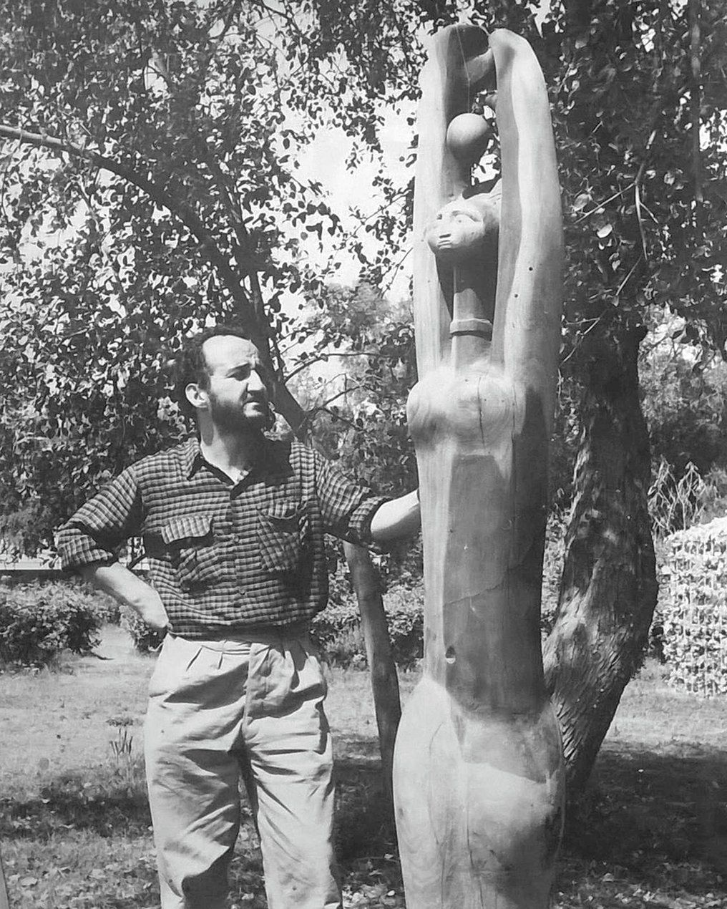
| Artist | Walker Evans |
|---|---|
| Year | 1919-1961 |
Jewad Selim was one of the leading figures of modern Iraqi art. Born in 1919, he developed his practice across painting, drawing, and sculpture, while searching for a visual language that could connect the artistic heritage of Iraq with modern forms of expression. His approach would become particularly influential through the Baghdad Modern Art Group, which he founded with Shakir Hassan Al Said in 1951.
Selim’s artistic education took him between Baghdad and Europe. He received government scholarships to study sculpture in Paris, Rome, and later at the Slade School of Art in London. After returning to Baghdad in 1949, he became Head of Sculpture at the Institute of Fine Arts, where he taught alongside maintaining his own artistic practice. His experiences abroad introduced him to modern approaches to painting and sculpture, but Selim did not want simply to reproduce European styles. Instead, he looked toward Iraq’s own artistic traditions as a basis from which a contemporary Iraqi art could develop.
In 1951, Selim and Shakir Hassan Al Said established the Baghdad Modern Art Group. The group brought together artists interested in creating modern work that remained connected to Iraqi culture and artistic history. Mathaf describes this approach through the concept of istilham al-turath, or seeking inspiration from tradition. Rather than treating the past as something to reproduce directly, Selim sought ways of translating its visual language into contemporary art.
Selim looked particularly toward ancient Iraqi art and the thirteenth-century illustrations of Yahya al-Wasiti’s Maqamat al-Hariri. These sources contributed to his development of a distinctly modern vocabulary of simplified human figures, symbols, strong lines, and carefully arranged areas of colour.
كان جواد سليم أحد أبرز رواد الفن العراقي الحديث. وُلد عام 1919، وطوّر ممارسته الفنية عبر الرسم والتخطيط والنحت، باحثاً عن لغة بصرية تربط التراث الفني للعراق بأشكال التعبير الحديثة. وأصبح نهجه مؤثراً بشكل خاص من خلال جماعة بغداد للفن الحديث، التي أسسها مع شاكر حسن آل سعيد عام 1951.
تنقل سليم في تعليمه الفني بين بغداد وأوروبا. حصل على بعثات حكومية لدراسة النحت في باريس وروما، ثم في مدرسة سليد للفنون في لندن. وبعد عودته إلى بغداد عام 1949، أصبح رئيس قسم النحت في معهد الفنون الجميلة، حيث مارس التدريس بالتوازي مع نشاطه الفني. وعرّفته تجاربه في الخارج على المقاربات الحديثة في الرسم والنحت، إلا أن سليم لم يكن يسعى إلى مجرد تكرار الأساليب الأوروبية. وبدلاً من ذلك، توجه نحو التقاليد الفنية العراقية بوصفها أساساً يمكن أن ينطلق منه فن عراقي معاصر.
في عام 1951، أسس سليم وشاكر حسن آل سعيد جماعة بغداد للفن الحديث. جمعت الجماعة فنانين مهتمين بإنتاج أعمال حديثة تظل مرتبطة بالثقافة العراقية وتاريخها الفني. ويصف متحف هذا النهج من خلال مفهوم استلهام التراث، أي البحث عن الإلهام في التقاليد. وبدلاً من التعامل مع الماضي بوصفه شيئاً يجب إعادة إنتاجه بصورة مباشرة، بحث سليم عن طرق لترجمة لغته البصرية إلى فن معاصر.
اهتم سليم بصورة خاصة بالفن العراقي القديم ورسوم يحيى الواسطي لمقامات الحريري التي تعود إلى القرن الثالث عشر. وأسهمت هذه المصادر في تطويره لمفردات بصرية حديثة ومميزة تقوم على الشخصيات البشرية المبسطة والرموز والخطوط القوية والمساحات اللونية المرتبة بعناية.
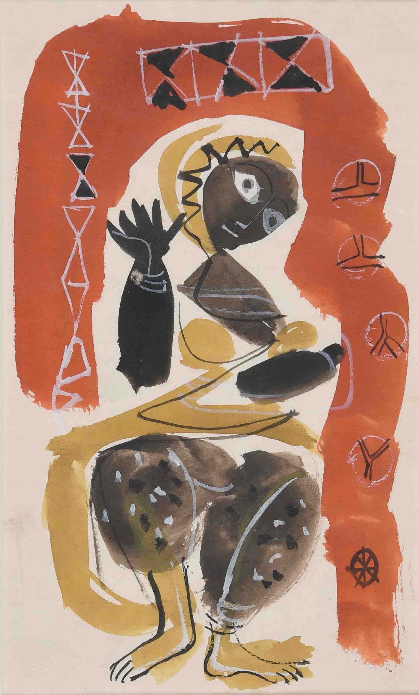
The undated Title Unknown demonstrates how Selim could transform the human figure through a highly simplified visual vocabulary. The composition centres on two stylised figures surrounded by large areas of red-orange, ochre, black, brown, and white. Rather than presenting the bodies naturalistically, Selim constructs them through broad shapes, curved outlines, and concentrated areas of colour.
A series of repeated geometric and linear signs surrounds the figures. Hourglass-like forms appear vertically along the left side, while additional enclosed symbols run down the right. Similar signs appear toward the top of the composition. These elements make the image operate simultaneously as a figurative scene and as an arrangement of symbols, lines, and colours.
The contrast between the upper and lower figures is particularly strong. The smaller upper figure is surrounded by an ochre circular form, while the much larger crouching figure dominates the lower portion of the image. Black and brown areas give the bodies visual weight, while the surrounding red-orange field creates a strong frame around the composition.
Selim’s interest in reducing figures into distinctive lines and simplified forms connects with his larger effort to establish a contemporary visual language informed by the artistic traditions of Iraq.
The relationship between abstraction and symbolism became an important part of Selim’s practice. Rather than separating modern abstraction from Iraqi artistic traditions, Selim explored how the two could exist together. Mathaf describes his artistic vision as negotiating heritage and tradition with contemporary aesthetics, establishing continuity between the past and the present.
توضح لوحة عنوان غير معروف، غير المؤرخة، كيف استطاع سليم تحويل الجسد البشري من خلال مفردات بصرية شديدة التبسيط. يتركز التكوين حول شخصيتين بأسلوب مبسط تحيط بهما مساحات كبيرة من الأحمر البرتقالي والأصفر الترابي والأسود والبني والأبيض. وبدلاً من تقديم الأجساد بأسلوب طبيعي، يبنيها سليم من خلال أشكال عريضة وخطوط خارجية منحنية ومساحات مركزة من اللون.
تحيط بالشخصيتين سلسلة من العلامات الهندسية والخطية المتكررة. تظهر أشكال تشبه الساعة الرملية بصورة عمودية على الجانب الأيسر، بينما تمتد رموز إضافية مغلقة على الجانب الأيمن. كما تظهر علامات مشابهة باتجاه الجزء العلوي من التكوين. وتجعل هذه العناصر الصورة تعمل في الوقت نفسه كمشهد تشخيصي وكتكوين من الرموز والخطوط والألوان.
يبرز التباين بصورة خاصة بين الشخصيتين العليا والسفلى. تحيط بالشخصية العليا الأصغر دائرة بلون أصفر ترابي، بينما تهيمن الشخصية المنحنية الأكبر حجماً على الجزء السفلي من الصورة. وتمنح المساحات السوداء والبنية الأجساد ثقلاً بصرياً، في حين يكوّن المجال الأحمر البرتقالي المحيط بها إطاراً قوياً حول التكوين.
يرتبط اهتمام سليم باختزال الشخصيات إلى خطوط مميزة وأشكال مبسطة بمسعاه الأوسع لتأسيس لغة بصرية معاصرة تستلهم التقاليد الفنية العراقية.
أصبحت العلاقة بين التجريد والرمزية جزءاً مهماً من ممارسة سليم الفنية. وبدلاً من فصل التجريد الحديث عن التقاليد الفنية العراقية، استكشف سليم الطرق التي يمكن أن يتعايش بها الاثنان. ويصف متحف رؤيته الفنية باعتبارها تفاوضاً بين التراث والتقاليد من جهة والجماليات المعاصرة من جهة أخرى، بما يؤسس استمرارية بين الماضي والحاضر.
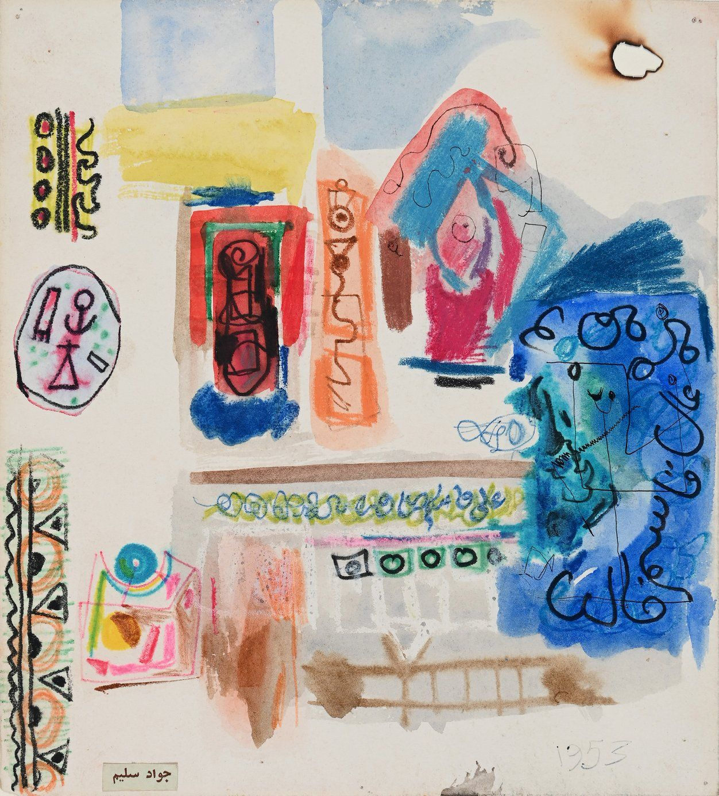
Selim’s 1953 Title Unknown presents this process particularly clearly. The composition is constructed from separate fields of blue, yellow, orange, red, green, brown, and pink, interspersed with black linear drawings and repeated decorative forms. Unlike conventional perspective, the work is organised almost like a collection of interconnected sections across the paper.
Human forms remain visible within the composition, but they merge into a larger system of symbols and abstract marks. On the right, a large blue field contains a face-like linear form alongside expressive black lines. Near the upper centre, another figure appears within overlapping pink and blue shapes. Elsewhere, circular marks, repeated patterns, geometric borders, and script-like lines give the surface a rhythmic quality.
The work demonstrates Selim’s ability to allow recognizable subjects and abstract forms to occupy the same composition. Figures do not disappear completely. Instead, the human body is simplified until it becomes part of a broader language of signs, colour, and line. This relationship between abstraction and recognizable imagery became an important characteristic of Selim’s modernist approach.
Selim’s interest in combining Iraqi history with modern artistic forms extended beyond works on paper. In 1959, he was commissioned to create a monumental sculptural relief commemorating the 14 July Revolution. The resulting work became known as the Freedom Monument in Baghdad.
The monument demonstrates on a public scale many of the ideas Selim explored throughout his practice. Human figures, historical references, symbolism, and a modern sculptural language come together to construct a narrative connected to Iraq and its people.
تقدم لوحة سليم عنوان غير معروف لعام 1953 هذا المسار بصورة واضحة بشكل خاص. يتكون التكوين من مساحات منفصلة من الأزرق والأصفر والبرتقالي والأحمر والأخضر والبني والوردي، تتخللها رسومات خطية سوداء وأشكال زخرفية متكررة. وعلى خلاف المنظور التقليدي، يبدو العمل منظماً تقريباً كمجموعة من الأقسام المترابطة الممتدة عبر الورق.
تبقى الأشكال البشرية مرئية داخل التكوين، لكنها تندمج في نظام أكبر من الرموز والعلامات التجريدية. وعلى اليمين، تحتوي مساحة زرقاء كبيرة على شكل خطي يشبه الوجه إلى جانب خطوط سوداء تعبيرية. وبالقرب من الجزء العلوي الأوسط، تظهر شخصية أخرى داخل أشكال وردية وزرقاء متداخلة. وفي مواضع أخرى، تمنح العلامات الدائرية والأنماط المتكررة والحدود الهندسية والخطوط الشبيهة بالكتابة سطح العمل طابعاً إيقاعياً.
يوضح العمل قدرة سليم على الجمع بين الموضوعات القابلة للتعرف والأشكال التجريدية داخل التكوين نفسه. ولا تختفي الشخصيات بصورة كاملة، بل يُبسط الجسد البشري حتى يصبح جزءاً من لغة أوسع من العلامات واللون والخط. وأصبحت هذه العلاقة بين التجريد والصور القابلة للتعرف سمة مهمة في نهج سليم الحداثي.
امتد اهتمام سليم بالجمع بين التاريخ العراقي والأشكال الفنية الحديثة إلى ما هو أبعد من الأعمال المنفذة على الورق. وفي عام 1959، كُلّف بإنشاء نحت جداري ضخم لإحياء ذكرى ثورة 14 تموز. وأصبح العمل الناتج معروفاً باسم نصب الحرية في بغداد.
يجسد النصب على نطاق عام العديد من الأفكار التي استكشفها سليم طوال ممارسته الفنية. فتجتمع الشخصيات البشرية والمراجع التاريخية والرمزية واللغة النحتية الحديثة لبناء سرد مرتبط بالعراق وشعبه.

Jewad Selim’s work played an important role in defining the direction of modern Iraqi art during the mid-twentieth century. Through painting, drawing, sculpture, teaching, and the Baghdad Modern Art Group, Selim searched for ways in which modern art could remain connected to local artistic heritage without simply reproducing the past.
The two works shown here demonstrate this approach particularly well. The undated watercolour transforms its human subjects into simplified figures surrounded by repeated symbols and strong fields of colour, while the 1953 work pushes further toward abstraction through overlapping figures, signs, lines, and areas of colour. Together, they demonstrate Selim’s continuing negotiation between representation and abstraction, and between Iraqi artistic heritage and modern visual expression.
لعبت أعمال جواد سليم دوراً مهماً في تحديد مسار الفن العراقي الحديث خلال منتصف القرن العشرين. ومن خلال الرسم والتخطيط والنحت والتدريس وجماعة بغداد للفن الحديث، بحث سليم عن طرق يمكن من خلالها للفن الحديث أن يظل مرتبطاً بالتراث الفني المحلي من دون مجرد إعادة إنتاج الماضي.
توضح الأعمال المعروضة هنا هذا النهج بصورة خاصة. فاللوحة المائية غير المؤرخة تحول موضوعاتها البشرية إلى شخصيات مبسطة تحيط بها رموز متكررة ومساحات لونية قوية، بينما يتجه عمل عام 1953 بصورة أكبر نحو التجريد من خلال الشخصيات والعلامات والخطوط والمساحات اللونية المتداخلة. وتوضح الأعمال معاً استمرار سليم في التفاوض بين التمثيل والتجريد، وبين التراث الفني العراقي والتعبير البصري الحديث.
Selim participated actively in exhibitions in Iraq and abroad. Mathaf records that in spring 1949, while still studying in Britain, Selim joined Hafidh al-Droubi and Ata Sabri in organising the First exhibition of paintings and sculpture by Iraqi Artists at present in England, sponsored by the Anglo-Iraqi Society. He exhibited oil paintings and three ceramics in the exhibition.
After returning to Baghdad, Selim held his first solo exhibition in 1950 at the home of Ellen and Nizar Ali Jawdat al-Ayoubi. Through the 1950s, he continued organising and participating in exhibitions while developing the Baghdad Modern Art Group and teaching at the Institute of Fine Arts.
In 1954, Selim became the first Iraqi artist to hold a one-person exhibition in the United States. His work continued to be exhibited after his death, including a retrospective at the National Museum of Modern Art in Baghdad in 1968.
شارك سليم بنشاط في معارض داخل العراق وخارجه. ويسجل متحف أنه في ربيع عام 1949، بينما كان لا يزال يدرس في بريطانيا، شارك سليم مع حافظ الدروبي وعطا صبري في تنظيم أول معرض للوحات والمنحوتات للفنانين العراقيين الموجودين آنذاك في إنجلترا، برعاية الجمعية الأنجلو-عراقية. وعرض سليم في المعرض لوحات زيتية وثلاث قطع خزفية.
بعد عودته إلى بغداد، أقام سليم أول معرض فردي له عام 1950 في منزل إيلين ونزار علي جودت الأيوبي. وخلال خمسينيات القرن العشرين، واصل تنظيم المعارض والمشاركة فيها بالتوازي مع تطوير جماعة بغداد للفن الحديث والتدريس في معهد الفنون الجميلة.
في عام 1954، أصبح سليم أول فنان عراقي يقيم معرضاً فردياً في الولايات المتحدة. واستمر عرض أعماله بعد وفاته، بما في ذلك معرض استعادي في المتحف الوطني للفن الحديث في بغداد عام 1968.
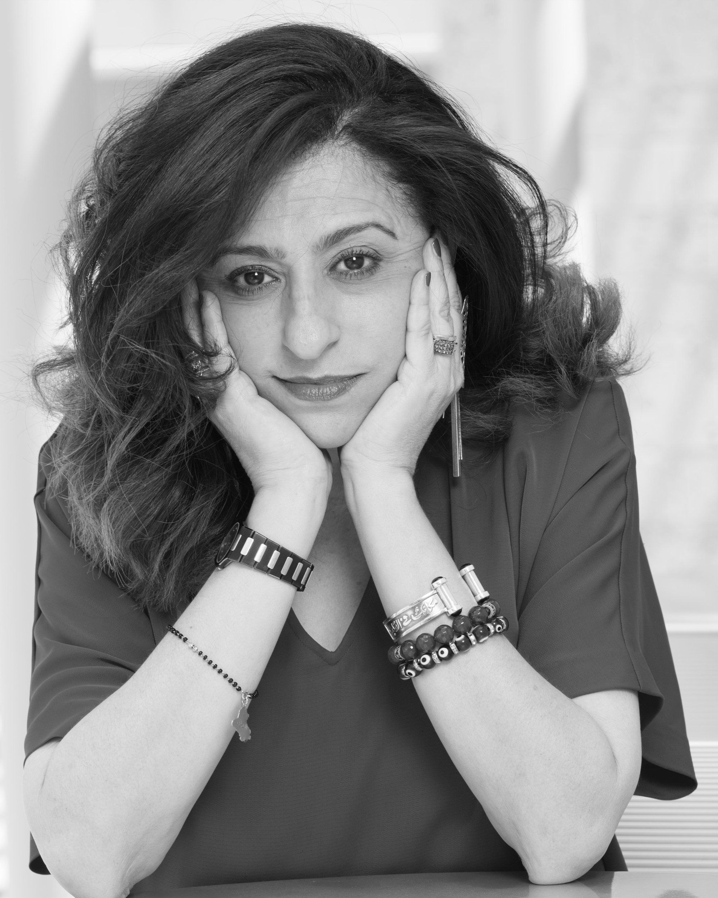
Dr. Nada M. Shabout is an art historian, curator, and scholar specialising in modern and contemporary Arab art, with particular attention to the history of modern Iraqi art. She is Regents Professor of Art History at the University of North Texas, where she also coordinates the Contemporary Arab and Muslim Cultural Studies Initiative. Her research explores the historiography of Arab and Iraqi art, cultural preservation, identity, and the politics surrounding modern artistic production.
Shabout is the founding president of the Association for Modern and Contemporary Art from the Arab World, Iran and Turkey (AMCA) and project director of the Modern Art Iraq Archive (MAIA). Through her research, writing, and archival work, she has contributed significantly to the documentation and study of modern Iraqi artistic heritage.
Alongside her academic work, Shabout has curated exhibitions examining modern Arab and Iraqi art. Her projects include Modernism and Iraq (2009), Sajjil: A Century of Modern Art (2010), Interventions: A Dialogue Between the Modern and the Contemporary (2010), and Dafatir: Contemporary Iraqi Book Art.
Her research on Iraqi modernism directly informs What Lingers in the Artist Mind: Experiments and Legacies of the Baghdad Modern Art Group. The exhibition considers the Baghdad Modern Art Group through its artists, artworks, archives, and continuing influence, placing the group’s history within the broader development of modern Iraqi art.
Shabout is the author of Modern Arab Art: Formation of Arab Aesthetics (2007) and co-editor of New Vision: Arab Art in the 21st Century (2009) and Modern Art in the Arab World: Primary Documents (2018).
الدكتورة ندى م. شبوط مؤرخة فن وقيّمة وباحثة متخصصة في الفن العربي الحديث والمعاصر، مع اهتمام خاص بتاريخ الفن العراقي الحديث. وهي أستاذة ريجنتس لتاريخ الفن في جامعة شمال تكساس، حيث تنسق أيضاً مبادرة الدراسات الثقافية العربية والإسلامية المعاصرة. وتتناول أبحاثها تاريخ كتابة الفن العربي والعراقي، والحفاظ على التراث الثقافي، والهوية، والسياسات المحيطة بالإنتاج الفني الحديث.
شبوط هي الرئيسة المؤسسة لجمعية الفن الحديث والمعاصر من العالم العربي وإيران وتركيا (AMCA)، ومديرة مشروع أرشيف الفن العراقي الحديث (MAIA). ومن خلال أبحاثها وكتابتها وعملها الأرشيفي، أسهمت بصورة كبيرة في توثيق التراث الفني العراقي الحديث ودراسته.
إلى جانب عملها الأكاديمي، نظمت شبوط معارض تناولت الفن العربي والعراقي الحديث. وتشمل مشاريعها Modernism and Iraq (2009)، وSajjil: A Century of Modern Art (2010)، وInterventions: A Dialogue Between the Modern and the Contemporary (2010)، وDafatir: Contemporary Iraqi Book Art.
تسهم أبحاثها حول الحداثة العراقية بصورة مباشرة في معرض What Lingers in the Artist Mind: Experiments and Legacies of the Baghdad Modern Art Group. ويتناول المعرض جماعة بغداد للفن الحديث من خلال فنانيها وأعمالها الفنية وأرشيفاتها وتأثيرها المستمر، واضعاً تاريخ الجماعة ضمن السياق الأوسع لتطور الفن العراقي الحديث.
شبوط هي مؤلفة Modern Arab Art: Formation of Arab Aesthetics (2007)، ومحررة مشاركة لكل من New Vision: Arab Art in the 21st Century (2009) وModern Art in the Arab World: Primary Documents (2018).
This student project was created in connection with Mathaf: Arab Museum of Modern Art and explores selected artworks featured in the exhibition What Lingers in the Artist Mind: Experiments and Legacies of the Baghdad Modern Art Group. Through this digital catalogue, the project presents selected artists and artworks while examining different approaches to Iraqi modern art, everyday life, the human figure, and the artistic legacy of the Baghdad Modern Art Group.
تم إنشاء هذا المشروع الطلابي بالتعاون مع متحف: المتحف العربي للفن الحديث، ويستكشف مجموعة مختارة من الأعمال الفنية المعروضة في معرض «ما يبقى في ذهن الفنان: تجارب وإرث جماعة بغداد للفن الحديث». ومن خلال هذا الكتالوج الرقمي، يقدم المشروع مجموعة مختارة من الفنانين والأعمال الفنية، مع دراسة مقاربات مختلفة للفن العراقي الحديث والحياة اليومية والجسد البشري والإرث الفني لجماعة بغداد للفن الحديث.
Learn more …
Mathaf: Arab Museum of Modern Art, located in Education City in Doha, explores and celebrates modern and contemporary art. Its collection surveys art of the 20th and 21st centuries from the Arab world and from wider regions historically connected to Qatar and the Arab Peninsula.
The collection brings together paintings, sculptures, works on paper, installations, and video works, representing major artistic movements and sites of production from the mid-19th century to the present. Through these works, Mathaf considers the social and cultural transformations associated with modernity and contemporary life, while contributing to conversations about art and society from both regional and global perspectives.
Alongside its permanent collection, Mathaf presents temporary exhibitions and public programmes dedicated to modern and contemporary art. Since its founding in 2010, the museum has presented exhibitions featuring internationally recognised modern and contemporary artists.
This catalogue is connected to the exhibition What Lingers in the Artist Mind: Experiments and Legacies of the Baghdad Modern Art Group, which explores the history, aesthetics, and legacy of the Baghdad Modern Art Group through artworks and archival material. The exhibition examines the development of the group, its changing membership, and its continuing significance within the history of Iraqi and Arab modern art.
يقع متحف: المتحف العربي للفن الحديث في المدينة التعليمية في الدوحة، ويستكشف الفن الحديث والمعاصر ويحتفي به. وتستعرض مجموعته فنون القرنين العشرين والحادي والعشرين من العالم العربي ومن مناطق أوسع ارتبطت تاريخياً بقطر وشبه الجزيرة العربية.
تجمع المجموعة بين اللوحات والمنحوتات والأعمال على الورق والتركيبات الفنية وأعمال الفيديو، وتمثل حركات فنية رئيسية ومواقع للإنتاج الفني منذ منتصف القرن التاسع عشر وحتى الوقت الحاضر. ومن خلال هذه الأعمال، يتناول متحف التحولات الاجتماعية والثقافية المرتبطة بالحداثة والحياة المعاصرة، ويسهم في الحوارات حول الفن والمجتمع من منظورين إقليمي وعالمي.
إلى جانب مجموعته الدائمة، يقدم متحف معارض مؤقتة وبرامج عامة مخصصة للفن الحديث والمعاصر. ومنذ تأسيسه عام 2010، قدم المتحف معارض تضم فنانين حديثين ومعاصرين معروفين على المستوى الدولي.
يرتبط هذا الكتالوج بمعرض «ما يبقى في ذهن الفنان: تجارب وإرث جماعة بغداد للفن الحديث»، الذي يستكشف تاريخ جماعة بغداد للفن الحديث وجمالياتها وإرثها من خلال الأعمال الفنية والمواد الأرشيفية. ويتناول المعرض تطور الجماعة والتغيرات في عضويتها وأهميتها المستمرة ضمن تاريخ الفن العراقي والعربي الحديث.